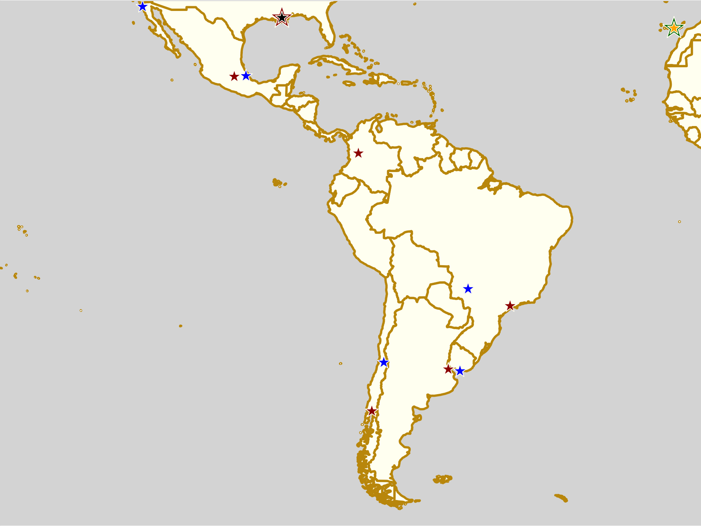

EROC 2019: The return of Europe's community conference.
Whilst it skipped a year in 2018, due to the potential conflict with the Roller Derby World Cup, one of the most important events in European Roller Derby is returning for 2019.
The European Roller Derby Organizational Conference will be 10 years old at the time of its next edition, running from January 31st through February 3rd 2019, in its usual host city of Berlin.
Since 2009, EROC has provided a place for the entire European derby community to come together to share experience, build contacts, and plan the future. It's been an invaluable starting point for several of the European National Governing Bodies, as well as helping to seed derby future across the continent.

Regular hosts, Bear City Roller Derby, have extended the conference to an additional day for the first time ever, providing two days of Workshops (Thursday + Friday) and two days of Sessions (the weekend) to bring together Europe's Roller Derby community in discussion and development.
Whilst EROC has always existed to help build the European community, this year has a particular focus on "Inclusivity", with several sessions and workshops specifically covering aspects of that area. (Those that do not explicitly cover the topic will still interact with it.)
And there will be a lot of sessions and workshops to cover:
8 workshops (longer, more interactive topics) of which the titles and conveners of 6 have been released:
-
Bout preparation: Footage Analysis, Data and Statistics (Michael Watson)
-
Retention & Growth - your league, our sport (Crazylegs)
-
Roller Derby Coaching Qualification (Hydra (Rule56))
-
Inclusive Practice and Accessibility (Feminist Killjoy)
-
Your League’s Brand - Does it say what you want? (Crazylegs)
-
Breaking down walls - how to work with conflict management (Maurine Filip)
20 sessions (shorter, more directed topics) of which the titles of 9 have been released:
-
Group Dynamics and Conflict Management (Pernilla Hellan and Lisa Plüschke)
-
Just another brick in the wall? What we need to know about the individual to create a good fit (Maurine Filip)
-
The Evaporating History of Roller Derby: fighting the Ephemerality of Digital Media (Sam Skipsey)
-
Inclusive Practice and Accessibility (Feminist Killjoy)
-
False Economies: Is our DIY Approach holding back our sport? (Hydra (Rule56))
-
Junior Derby (Barney Trubble)
-
How Skateboarders dealt with FIRS, best practices for WFTDA and FIRS (Shiran Habekost)
-
Is it in the walls? How organisational structures affect behaviour (Maurine Filip)
-
The first WFTDA Continental Cup Feedback Experience and best Practices (Birmingham Blitz Dames)
Other unconfirmed topics previously mentioned as appearing include (unless we've missed a few covered above):
- Whipping your finances into inclusive shape
- Low level harassment, aggression, consent, bystanders behaviour
- Officiating crew selection process. Sexism and discrimination
- Open divisions and all-gender roller derby
- Long lasting officiating
However, that's still not all, as in addition, special sessions will be held, including a Round Table meeting with NGBs / National Teams and Governing Bodies, A League Fair (including space to sell merch and advertise your league), a 2 day WFTDA Officiating Clinic (weekend)...
...and the requisite on-skates events, including the "EROC All-Stars Scrimmage" on Saturday afternoon/evening, and Chicks in Bowls Berlin beginners' bowls and ramps sessions on Sunday.
As part of the inclusive focus, Group Discounts for multiple-tickets are available for consortia of smaller leagues banding together to share costs (meaning that, for example, if you and three other leagues can each only afford to send a single delegate each, you can pay together for 4, and get the same benefits as a single league sending 4 delegates); if all of those leagues are less than 3 years old, have less than 20 members, and are EROC first timers. If your league does not qualify, there are also a limited number of "Soliprice" (free, host-subsidised) tickets available, to delegates with a strong case for why inclusion is particularly important to them (and/or how they will bring EROC experience back to their league).
We would especially encourage leagues from newer areas to send a delegate, if they are able: EROC is only as good as the breadth of experience and viewpoints at it, and some of the most valuable opinions are from some of the newest places with derby.
Registration is available via the following link: https://docs.google.com/forms/d/e/1FAIpQLScUDoNk7cHaAqDsFIa1vjdCeHBwPjnlVjl-bvRRLhYz3Im_tg/viewform with Early Bird discounts lasting until the end of the year.
with the additional on-skates activities available with an additional submission here: https://docs.google.com/forms/d/e/1FAIpQLSfLPe5crURLG9pbhqL3bLoR1xvPRzhshloOmRXTS-ZaVVHOiw/viewform
Jewish Roller Derby: shining a light.
A positive effect of all such teams is that they can give visibility to the concerns and experiences of the community they represent; this can be, and commonly is, the founding aim of such a team. This is certainly the case for the newest such project: the Jewish Roller Derby team, which launched only a few weeks ago.
We talked to Jewish Roller Derby's founders, Tiggz and Jodi Bon Jodi, both from Rose City Rollers, about their aims for the team, and how you can be involved.
Tiggz was drawn to form the team partly from her experience within another team drawn from shared history: the 2018 Team Russia Roller Derby. Whilst she enjoyed her time in a National Team and at the World Cup, she was conscious that she didn’t experience the same level of shared-history as the rest of the team did with each other. As the only team member qualifying via a relative with Russian-Jewish heritage, Tiggz was drawn to think about the importance of that other aspect of her culture.
This experience was, perhaps, emphasised by living and working in Portland, itself a city with a very small Jewish population (as Jodi noted to us, “if I played for Gotham, maybe I’d not have felt the same need to make a team to represent Jewish people”, given New York’s ownership of the largest Jewish community outside Israel).
But, more than that, it was also the feeling that this was a time when Jewishness needed more voices to counter rising bigotry which drove the pairs’ final decision to make the team.
It would take considerable ignorance of history to not be aware of the long-standing spectre of anti-Semitism across the world. Whilst many vocal proponents of this insidious bigotry became quieter in the later half of the 20th century, over the last few decades (and especially the last few years), anti-Semitic speech and conspiracy theories have once again become a dangerous thread in politics, on both sides of the Atlantic Ocean, and elsewhere. Only a few days ago, for example, a CNN International poll reported that around a quarter of Europeans polled believed that "Jews have too much influence in business and finance" and "have too much influence in conflict and wars worldwide", and similar figures are reported from the USA. Coupled with dog-whistle attacks from powerful world leaders, and an alarming increase in anti-Semitism motivated murders and assaults worldwide, it's an increasingly dangerous and difficult time to be Jewish.
One way in which we can counter bigotry is to educate and shine a light on those groups discriminated against; bigotry stems from ignorance, and merely being more visible can help to fight fear and intolerance.
The word and concept of "Jewishness" incorporates, inherently, a number of interrelated-yet-distinct qualities - belief in (and or practice of) a particular religion, participation in a particular culture, possession of a particular ethnicity or lineage - which any particular Jewish person may participate in all aspects of, or only some or one. (Indeed, there are multiple ethnic divisions within the overall “Jewish ethnicity”, with distinct traditions and languages.) As such, Tiggz and JBJ consider the question of "eligibility" of applicants to be one that should be settled by the applicant themselves, not imposed by a strict definition.
"I'd say to someone wanting to know if they can apply: ask yourself, 'what would it mean to you to be part of a Jewish Roller Derby team?', and decide based on that", says Tiggz.
In fact, the founders are excited to see what a spectrum of Jewishness sign up for the project: from people of the Ashkenazi heritage who form the basis for much of Europe’s idea of “Jewish”, through Sephardim, Mizrahim, Maghrebhim and others; and to take opportunities to educate both each other and the Roller Derby community about their diversity.
The first "competitive aim" for the Jewish Roller Derby project is to field a WFTDA-gender-policy team at the next Rollercon, against an opponent to be decided. After that, the founders have no concrete plans, although there's always more teams that can be challenged; from National teams to others attached to important campaigns.
More importantly, of course, the Jewish Roller Derby project aims to, whatever bouts it participates in, provide both a space in which Jewish skaters can find community with one-another, and a space and platform for educating and advocating for the Jewish community, at a time when it is needed once again.
The Jewish Roller Derby project can be contacted via Facebook on their page: https://www.facebook.com/jewishrollerderby/ and by email at: jewishrollerderby@gmail.com
If you want to apply to be in the team for the exhibition bout at Rollercon 2019, you can do so via this form: https://docs.google.com/forms/d/e/1FAIpQLSfEUYxozZdqzMXfPFQsJe2K4I3ZaD411U0NZSVApkWHMMv5Cg/viewform
Non-US/Canadian Derby Roundup: 1st/2nd December Edition
Predictions of bouts are from FTS, if possible, and from our own SRD Rank where FTS cannot make predictions (for example: Latin America, or non-MRDA men’s bouts). (SRDRank also has recent WFTDA rankings, including the 31st June ranking, as well as SRDRank, and allows you to make predictions from them.)
If we’ve missed you from our roundup, please let us know! [Or add yourselves to FTS and/or Derbylisting]
We're trying a new colour coding this week, to differentiate BOUTS from RECRUITMENTS and OPEN SCRIMs, and BOOTCAMPs.
Scotland
We're supposedly in the off-season, but this isn't slowing derby much, as 5th Blocker Skates 7th Birthday brings a lot of games to Glasgow.- Wed, Edinburgh: Edinburgh's first Junior Derby team, the Boardwalk Bombs practices and recruits at The Boardwalk, every Wednesday [EVENT]
- Thurs, Dumbarton: Chicks in Bowls Scotland host Quad Meet sessions [6-10pm, Unit23 Skatepark][EVENT]
- Fri, Aberdeen: Granite City Brawlers' final Free Open Night lets interested potential members experience the sport, either as a competitive skater or an official [EVENT]
- Fri, Edinburgh: Auld Reekie Roller Derby host their end of year Awards Night for 2018! [EVENT]
- Fri, Glasgow: Glasgow Men's Roller Derby's ongoing new skater intake continues every Friday, for the foreseeable future! [EVENT]
- Fri, Grangemouth: Bairn City Rollers rolling recruitment continues in their Friday sessions. Open to all genders. [EVENT]
- Aberdeen: Granite City Roller Derby are in the Christmas spirit with the return of their Christmas Craft Fayre and Market, helping you stock up with interesting gifts! [EVENT]
- Dundee: We believe Dundee Roller Derby will be represented at the Reclaim March Against Gender Based Violence. [EVENT]
- Glasgow: 5th Blocker Skates host their now regular birthday party party day of scrims (sign up in advance). The schedule includes all variants of Roller Derby by gender policy and skill level, as well as the entire 5th Blocker Shop stock for those interested in buying themselves more stuff. [EVENT]
- Glasgow: Resistance Roller Derby, Glasgow's Junior Roller Derby club for queer and trans young people continue their training sessions open to new skaters and existing. [EVENT Flyer]
- Sun, Aberdeen: Chicks in Bowls Scotland host a Sunday Skate followed by a park skate outside [Transition Extreme Sports] [EVENT]
- Sat?, Dumbarton: Chicks in Bowls Scotland host all-ages coaching for Ramps and Bowls skating [10am-midday, Unit23 Skatepark?]
- Mon, Aberdeen: Granite City Roller Derby host their Christmas Quiz, a festive themed fundraising quiz at their sponsoring venue, Krakatoa [EVENT]
- Tues, Aberdeen: Chicks in Bowls Scotland host a regular Quad Meet (Transition Extreme) [EVENT]
United Kingdom
The situation is equally busy in the UK as a whole, with bouts and scrimmages across the country; plus Rule56's Derby Stance Online running from Thursday for everyone!- Thurs, Nottingham, England: Nottingham Hellfire Harlots rolling open recruitment continues, open to potential new skaters under WFTDA gender policy [EVENT]
- Thurs, ONLINE and around the World: The Derby Stance Online Coaching Summit, hosted by Rule56 runs this extended weekend from Thursday to Sunday! [EVENT]
- Thurs, Flint, Wales: North Wales Roller Derby host their monthly "Men's open scrim", open to skaters under the MRDA-gender policy, mins-passed. [EVENT]
-
Haywards Heath, England: Brighton Rockers Roller Derby host a double header, and the debut of their new C Team! [EVENT]
- Brighton Rockers C-Side (Brighton C) versus Rookie Challenge Team
- Rockerbillies (Brighton B) versus Bath Roller Derby B? [FTS]
-
Ipswich, England: Suffolk Roller Derby hosts a pizza-themed 10-team Sur5al tournament, for 90 track-minutes of Roller Derby round-robin tournament! [EVENT]
- Sur5al team names based on pizza toppings : Anchovies, Dessert, Doner, Garlic Bread, Hawaiian, Jalapenos, Margherita, Meat, Vegan, Veggie (!)
- (Upper Heyford), Oxford, England: Oxford Roller Derby host the last of their Taster Sessions for interested potential new skaters, ahead of their recruitment in the new year! [EVENT]
- Manchester, England: Arcadia Roller Derby host the December edition of their monthly Pick-Up Scrim, an open scrim for all. [EVENT]
- North Shields, England: Newcastle Junior Roller Derby host their Christmas Roller Disco, in collaboration with Skate Club North East [EVENT]
- Salford, England: Manchester Roller Derby host a triple header event [EVENT]
- Sun, Manchester, England: Manchester Roller Derby follow up their triple header with a mixed-level Open To All genders scrim, also open as always to any NSOs and skating officials who want to attend. [EVENT]
- Sun, Northwich, England: North Cheshire Victory Rollers host their Christmas Social Skate, an afternoon of family fun on skates for all the family. [EVENT]
- Sun, Norwich, England: Norfolk Roller Derby host a quadruple-header Derby Sevens home teams event to close the season [EVENT]
- 4 x Sevens games [with only two team names announced which is a bit confusing]
- Sun, Sheffield, England: The Inhuman League host another of their regular Open To All genders scrims, this one with the inevitable Christmas theme. Also open to NSOs and skating officials who want to come along. [EVENT]
- Sun, York, England: York Minxters host a December Double header to round out the year, hosting two open-subscription team events with a "Ginger Bread versus Candy Canes" theme. Limited spectator space. [EVENT]
- WFTDA-gender "Debut Scrim" (0-5 games experience)
- WFTDA-gender "Mixed Scrim" (3+ games experience)
- Sun, Penarth, Wales: South Wales Silures host their regular Open Mixed Scrim - Open To All genders, mins-passed. [EVENT]
- Tues, Manchester, England: New Wheeled Order, Manchester Roller Derby Men, host the start of a series of open training sessions leading up to the end of the year [EVENT]
Europe
France continues to have all the roller derby it can host, with the first fixture of the Championnat de France Nationale 1 sharing time with several other triple and double headers! The Suomi Cup 2018/9 season hosts the debut of their first non-Finnish competitors, as St Petersburg's White Night Furies play two away games. Spain, Slovenia, Italy, Belgium, Netherlands, Sweden and Switzerland also host bouts.- Wed, Ostrava, Czech Republic: Trojhali Ostrava Roller Derby continue their open training / recruitment [EVENT]
- Wed, Paris, France: The Track's Watch host a clinic on "theory" (which given the photo and the host, we assume means this is a pre-mins rules clinic?) [EVENT]
- Wed, Udine, Italy: The Banshees of Roller Derby Udine host their second open scrimmage of the season (no gender policy stated). [EVENT]
- Wed, Gdańsk, Poland: 3City Piranhas host another fixture in their rolling training sessions for new skaters [EVENT]
- Wed, Wrocław (Breslau), Poland: Breslau Rebels Roller Derby + Breslau Avengers Roller Derby host their regular open training / recruitment [EVENT]
- Thurs, Saint-Vallier, France: Roller Derby Bassin Minier host an open charity mixed training event and raffle, as part of the AFM Telefon this year [EVENT]
- Thurs, Toulouse, France: the Quad Guards of Roller Derby Toulouse host a recruitment for the team (focused on MRDA-gender skaters). This is the second of three recruitments for Quad Guards before the end of the year. [EVENT]
- Thurs, Mannheim, Germany: the Delta Quads 2 month NSO Academy continues for its second week (so there's still time to start, we think) [EVENT]
- Fri, Tallinn, Estonia: Tallinn Roller Girls continue their regular open practice / recruitments for anyone who wants to join the sport [EVENT]
- Fri+Mon, Tartu, Estonia: Tartu Roller Derby also hold their regular open training and recruitment days on Fridays (sometimes sharing with Tallinn) [EVENT]
- Fri, Essen, Germany: RuhrPott Roller Girls host Rainbow Xmas, described as the "ultimate queer Christmas bash" (!) at Hotel Shanghai. [EVENT]
-
Kuopio, Finland: The 2018/9 season of the Suomi Cup starts in earnest in Kuopio, with two bouts hosting the first non-Finnish team in the series, and a bit of history. [FTS tournament][EVENT]
- Kouvola Rock n Rollers versus White Night Furies (St Petersburg)
- Kuopio Roller Derby versus White Night Furies
- Sat+Sun, Belfort, France: The Knee-Breakers on Wheels host a mixed gender bootcamp over the weekend, coached by Toulouse's Yass lad Menace and Slash Gordon. Includes scrimmage on Sunday. [EVENT]
- Bordeaux, France: Roller Derby Bordeaux Club host their December recruitment / intake day [EVENT flyer]
- Équeuerdreville, France: the CherBoobs host a triple header event today [EVENT]
- Épinal, France: Gabriel Loisy hosts an exhibition of his photography of Roller Derby, in collaboration with Reaper's Crew (Roller Derby Épinal) [EVENT]
- Fontenay-sous-Bois, France: La Boucherie de Paris host an A/C double header [EVENT]
-
Mérignac, France: SAM Roller Derby's All Blocks are part of a triple header of roller sports action [EVENT]
- U14/U16 Roller hockey game
- Mérignac Women's Roller Hockey versus ERG Isterlohn (Women's Euroleague game)
- All Blocks (Mérignac A) versus PDG ( ) [FTS?]
- Sat+Sun, Strasbourg, France: Hell's Ass Derby Girls host the first fixture of the 2018-19 Championnat de France National 1 (the top tier of the French tournament). [FTS tournament][EVENT]
- Velvet Owls (Dijon) versus Les Encastreueses (Lutece Destroyeueses | Paris)
- Hell's Ass Derby Girls (Strasbourg) versus Les Quedalles (Paris B)
- Switchblade Roller Grrrls (Roller Derby Lille) versus Velvet Owls
- Hell's Ass Derby Girls versus Les Glorious Bâtardes (Lomme Roller Girls [ex. Lille Roller Girls])
- Switchblade Roller Grrrls versus Les Quedalles
- Hell's Ass Derby Girls versus Les Encastreueses
- Velvet Owls versus Les Quedalles
- Les Glorious Bâtardes versus Les Encastreueses
- Sat-Sun, Valence, France: Red Valentines Revenge host their second bootcamp, comprising parallel sessions for beginner skaters (coached by Boulet and Deep Turtle), beginner referees (coached by Laraclette) and beginner NSOs (coached by Dr. Evil). Scrimmage at Sunday end. [EVENT]
- Limerick, Ireland: Limerick Roller Derby are getting together for an end of season Xmas Party at Dolan's Pub! [EVENT]
-
Bergamo, Italy: the Crimson Vipers host a single header event [EVENT]
- Crimson Vipers (Bergamo) versus Les Simones (Orléans) [FTS]
-
Poznań, Poland: the Bad Rangers Poznań Roller Derby League host the first Santa Claus Tournament ( Turniej Mikołajkowy ), also a celebration of 5 years of Roller Derby in Poland! [EVENT]
- Three 2x20 minute mixed team games (presumably a round robin?)
-
Ljubljana, Slovenia: Roller Derby Ljubljana host their first bout of the year (with free entry!) [EVENT]
- Roller Derby Ljubljana versus Steelcity Rollers (Linz) [FTS]
- A Coruña, Spain: Roller Derby Coruña Irmandiñas host a celebration of their 2nd anniversary with a party in the Caneca Furada, and an exhibition of Roller Derby art! [EVENT]
-
Las Palmas de Grand Canaria, Spain (Canary Islands): Las Palmas Roller Derby host a triple-header round robin of international roller derby to end the year! [EVENT]
- Las Palmas Roller Derby versus Team Unicorn (London-area exhib)
- Team Unicorn versus Sereas Bravas (Vigo)
- Sereas Bravas versus Las Palmas Roller Derby [FTS]
-
Madrid, Spain: Roller Derby Madrid host a B-teams game [EVENT]
- Roller Derby Madrid B versus Lisboa Roller Derby Troopers (Lisbon) [FTS]
- Gothenburg, Sweden: Gothenburg Roller Derby host a double header of Roller Derby to finish off the year [EVENT]
-
Lucerne, Switzerland: The Hellveticats host their 4th and final home game of the season [EVENT]
- Hellveticats (Lucerne) versus Fearless Bruisers (Innsbruck) [FTS]
- Sun, Brussels, Belgium: Brussels Derby Pixies host the second edition of their Tracktiflette minitournaments followed by tartiflette! [EVENT]
- Sun, Helsinki, Finland: Helsinki Coast Quads have found a very large space, and are going to use it for some roller derby related fun: an experiment in Yuletie "Big Track Roller Derby" organised by their skater, Bukkake Randelin. [EVENT]
- Some kind of skating around on a really big track, probably with mulled drinks.
- Sun, Rome, Italy: the She-Wolves of Roller Derby Rome host a "Fresh Meat" day for anyone interested in the sport, including a demo game. Also open to potential officials as well as competitive skaters. [EVENT]
- Sun, Amsterdam, Netherlands: Amsterdam Roller Derby host their first games of the season [EVENT]
- All Stars (Amsterdam A) versus "Arnhem Fallen Angels and Friends"
- BattleStars (Amsterdam B) versus Roller Derby Tournai [FTS]
- Sun, Gdańsk, Poland: Chrome Sirens Roller Derby host their weekly open training sessions for all potentially interested new skaters. [EVENT]
- Sun, Gijón, Spain: La Güestia Roller Derby Asturias host a number of events this Sunday: (unfortunately, they don't have an Event to link to, just a post listing stuff [EVENT Flyer])
- open training (mid morning)
- participation in Demonstration against Gendered Violence (early afternoon)
- Outreach at "Abierto hasta el amanecer" explaining and demonstrating Roller Derby.
- Sun, Gothenburg, Sweden: following on from their double header on Saturday, Gothenburg Roller Derby host a "Try it" event, where interested potential skaters can give roller derby a go themselves! [EVENT]
- Mon, Warsaw, Poland: Worst Warsaw Derby Team's rolling recruitment series continues this month, open to all interested skaters [EVENT]


Pacific
There's finally a quiet place in the World, as it seems that most of the Pacific is taking a rest this weekend, although the mysterious Japanese Derby Nights 4x4 tournament continues to roll on!- Fri, Tokyo, Japan: Kamikaze Badass Roller Derby Tokyo have regular training on Fridays, which new skaters are always welcome to [EVENT Flyer]
- Fri, Tokyo, Japan: we believe the next fixture in the Derby Nights 4x4 mini-tournament is on this date, but as usual there's almost no public information about it [EVENT Flyer??]
- Spiral Cats (Tokyo FIRS) versus ??
- Brisbane, QLD, Australia: Sun State Roller Derby celebrate the end of another year with "A Very Sun State Christmas", with awards night and fun and games [EVENT]
- Greensborough, VIC, Australia: Diamond Valley Roller Derby Club are getting together for an End of Year party too! [EVENT]
- Sun, Melbourne, VIC, Australia: WestSide Derby Dollz host the first of three Amber-level Scrimmages in their "Summer Slam" series (the other two will be in 2019). Skaters signing up will be kept in the same team for all scrimmages to allow them to gel together. [EVENT]
- Amber (reduced contact) level scrimmage #1
- Sun, Pyeongtaek, South Korea: Osan Humphreys Roller Derby are apparently active again, and are hosting an open "rookie roundup" for interested potential members [EVENT Flyer]
- Wed, Bangkok, Thailand: Bangkok Roller Derby have their regular training evening, which is always open to new skaters [EVENT Flyer]

Latin America
As usual, it's hardest for us to track things in Latin America, but we think we've found most of the events going on, with fixtures in Argentina (the debut bout for "Roller Derby Central Córdoba"), Chile, and Mexico!- Wed, Mérida, Yucatán, Mexico: Roller Derby Mérida Yucatán hosts its first recruitment day [EVENT Flyer]
- Wed+Mon, Xalapa, Mexico: We believe that Ráfagas Roller Derby run their intro to skating sessions on these days (intro to Roller Derby is on Wed+Fri) [EVENT Flyer]
- Wed, Fri, Mon, Montevideo, Uruguay: Tempestad Roller Derby continue their rolling recruitment [EVENT Flyer]
- Thurs+Mon, Ensenada, Mexico: Nereidas Ensenada Roller Derby have open recruitment at their training sessions [EVENT Flyer]
- Thurs+Sun?, Montevideo, Uruguay: Pájaros Pintados Roller Derby train, and are open to new skaters [EVENT Flyer]
- Fri, Mon, Tues, Santiago, Chile: Terror S-Quad Roller Derby running rolling recruitment at their weekly training sessions... [EVENT]
-
San Miguel de Tucuman, Argentina: the newly formed "Roller Derby Central Córdoba" host their first ever bout, a double-header [EVENT]
- Roller Derby Central Córdoba versus "The World (women)"
- "Mixed scrimmage", which might be mixed gender.
- Sun, Campo Grande, Brazil: Meat Machine Roller Derby are back, and hosting open training for anyone who wants to join on Sundays! [EVENT Flyer]
- Sun, Piracicaba, Brazil: Capivaras Roller Derby host an open game (we think this might be an open subs scrimmage?) [EVENT]
- ? v ?
- Sun, Santiago, Chile: Furias Roller Derby and Metropolitan Roller Derby co-host a quintuple header with triple round robin, "Mad Jam". [EVENT]
- Furias Roller Derby (Santiago) versus Bayonetas (Metropolitan B | Santiago) [FTS]
- Esteparias Roller Derby (Río Gallegos) versus Furias [FTS]
- Esteparias Roller Derby versus Bayonetas [FTS]
- Metropolitan All Stars (Santiago) versus The World
- Terror S-Quad (Santiago M) versus The World
- Sun, Mexico City, Mexico: Humuhumunukunukuapua Roller Derby host a single header (with just a flyer) as part of EMEXRD [EVENT flyer]
- Humuhumunukunukuapua Roller Derby (Mexico City) versus Roller Devils (Toluca) [FTS]
- Sun, San Luis Potosí, Mexico: Caóticas Roller Derby host a single header with almost no evidence except a link from their opponents [EVENT Flyer]
- Caóticas Roller Derby (San Luis Potosí) versus Amour Roller Derby (Morelia) [FTS]


Africa and Middle East
In the Middle-East and Africa, there's the usual ongoing events we're aware of.- Thurs, Pretoria, South Africa: P-Town Roller Derby's weekly funskate open-skating events continue, with the chance to meet+sign up with the team [EVENT]
- Sat+Mon, Dubai, United Arab Emirates: Dubai Roller Derby hold their usual practice sessions (which we think are open to interested new skaters, on prior request) [EVENT]
- Sun+Tues, Abu Dhabi, Emirate of Abu Dhabi: Abu Dhabi Roller Derby's recruitment season starts, with their practices open to new skaters who want to try the sport [EVENT Flyer]
Guest Post: Roller Derby — Bangkok Style!
In another guest post, we're bringing you a report on Bangkok Roller Derby's recent bout against Pan-Asian travel team, the Spring Rollers, by Mouth Almighty; Mouth recently moved to Bangkok (after being deeply involved in UK derby), and this was her first experience of the East-Asian implementation of the sport.
So, 2 weeks ago I moved from the UK to Bangkok as part of a change of employment. As a former skater with Wolverhampton Honor Rollers and a former director of UKRDA (United Kingdom Roller Derby Association) back in Britain, I was eager to see what Roller Derby in Bangkok had to offer.
As luck would have it, within my first week of moving to Thailand, Bangkok Roller Derby were hosting an event: "Monsoon Mayhem".
So, at 7pm on Saturday 17th of November, I had my very first taste of Roller Derby, Bangkok-style.
Most Roller Derby bouts or events in the UK tend to be set in the morning or mid afternoon, in a local leisure centre or school (or whatever venue a team can manage to find that is big enough to host a game and is willing to allow teams to actually skate).
Here, Bangkok Roller Derby have the luxury of an actual Roller Dome and an evening start time (I can see why, as it had been 34°C most of the day, with a huge rainstorm in the afternoon, so the humidity factor meant that it was still about 30 degrees at 7pm).
These factors put together surely helped bring what was very close to a capacity crowd to this event, something that I fear very few Roller Derby teams in the UK have the joy of seeing at their events.
Bangkok Roller Derby versus Pan-Asian Spring Rollers
The gameplay itself was fast paced and aggressive, not violent, simply aggressive, passionate gameplay. The girls on track seemed to truly enjoy the fun, frantic pace of the game, as did the people watching it.
An injury early on in the first half bought to my attention that first aid here in Bangkok is not at the same level as bouts in the UK. (However, this was a friendly game). A single first-aider dealt with the injured player before she was eventually taken off the track in a wheelchair (temporary, I’m sure!) to rapturous applause from both players and spectators.
The game continued at a fast pace, with fast jams but with relatively low scoring from both teams; some heavy blocks and hits but thankfully no more injuries.
The second half continued at the same frantic pace, some very fast jammers up against some skilled blocking on both teams.
Noticeable differences between UK and Bangkok Roller Derby included less referees and NSOs (this may have been due to lack of volunteers perhaps [something which affects Roller Derby everywhere - Ed]) but as Bangkok Roller Derby grows, and as roller derby in Asia grows in general, this will surely stop being the case.
Announcing was minimal, but with a team made up of English, American, Canadian, French and Thai players, and with a truly multicultural audience watching, perhaps announcing would have simply been lost in translation...
There was also no music playing during the game, something that as a follower of UK roller derby I have become used to.
One thing Bangkok Roller Derby did that is not the norm in UK (although is becoming more common for the big tournaments) is half time entertainment: three inline skaters (one in a dinosaur costume) dancing and doing tricks, followed by throwing cuddly toys out into the crowd, which the audience loved.
The game finished and it was evident that the players on track, the spectators and everyone involved had enjoyed a great evening of roller derby
Bangkok Roller Derby can be found here: https://bangkokrollerderby.weebly.com/
Their opponents, the Pan-Asian Spring Rollers, are a travel team composed of members of Beijing Roller Derby, Shanghai Roller Derby, Hong Kong Roller Derby and Bangkok Roller Derby (but are open to other Asian teams). They can be found here: https://www.facebook.com/Pan-Asian-Spring-Rollers-448887468791803/
Non-US/Canadian Derby Roundup: 24th/25th November Edition
We’re bringing you another roundup of the upcoming Roller Derby this weekend from across the world. As always, we’re using Flat Track Stats for much of this information – for regions with less good coverage, we also do a bit of intensive searching using a tool which scans the Facebook events of Roller Derby leagues known to
.
Predictions of bouts are from FTS, if possible, and from our own SRD Rank where FTS cannot make predictions (for example: Latin America, or non-MRDA men’s bouts). (SRDRank also has recent WFTDA rankings, including the 31st June ranking, as well as SRDRank, and allows you to make predictions from them.)
If we’ve missed you from our roundup, please let us know! [Or add yourselves to FTS and/or Derbylisting]
We're trying a new colour coding this week, to differentiate BOUTS from RECRUITMENTS and OPEN SCRIMs, and BOOTCAMPs.

Scotland
Much of the action for Scottish teams is away this weekend (Glasgow Men's and Glasgow are both away - Glasgow in an international tournament), but up in Aberdeen, Granite City Brawlers play another tough game. (And, in Inverness the day after, there's a chance to try out the new Short Track Roller Derby.)
- Wed, Edinburgh: Edinburgh's first Junior Roller Derby league, the Boardwalk Bombs practices and recruits at The Boardwalk, every Wednesday [EVENT]
- Thurs, Dumbarton: Chicks in Bowls Scotland host Quad Meet sessions [6-10pm, Unit23 Skatepark][EVENT]
- Fri, Aberdeen: Granite City Brawlers host another (the second-last) in their series of free open-nights for anyone wanting to see what roller derby is all about, as a competitive skater or an official. [EVENT]
- Fri, Edinburgh: United Sk8s host the second Junior derby in Edinburgh (although we believe they're still working on the skating bit first), [EVENT]
- Fri, Glasgow: Glasgow Men's Roller Derby's ongoing new skater intake continues every Friday, for the foreseeable future! [EVENT]
- Fri, Grangemouth: Bairn City Rollers host Open To All rolling intake, every Friday [EVENT]
-
Aberdeen: Granite City Brawlers host a single header event [EVENT]
- Granite City Brawlers (Aberdeen O/M) versus Inglorious B*Stars (Newcastle MB) [FTS]
- Glasgow: Resistance Roller Derby, Glasgow's Junior Roller Derby club for queer and trans young people continue their training sessions open to new skaters and existing. [EVENT Flyer]
- Sun, Aberdeen: Chicks in Bowls Scotland host a Sunday Skate followed by a park skate outside [Transition Extreme Sports] [EVENT]
- Sun, Inverness: Inverness City Roller Derby host the second public trial of Short Track Roller Derby in Scotland [EVENT]
- Sun, Livingston: New Town Roller Girls host Scrimmas, their celebration of Christmas via the medium of Learning Scrims. WFTDA-gender policy for skaters, open to referees and NSOs too - the emphasis is on learning, so breaks will be taken to discuss what's happening and allow questions [EVENT]
- Sat?, Dumbarton: Chicks in Bowls Scotland host all-ages coaching for Ramps and Bowls skating [10am-midday, Unit23 Skatepark?]
- Tues, Aberdeen: Chicks in Bowls Scotland host a regular Quad Meet (Transition Extreme) [EVENT]
United Kingdom
After last weekend being mostly in Newcastle, this weekend there's bouts all over the place, as everyone gets their derby in before Christmas!
- Thurs, Nottingham, England: Nottingham Hellfire Harlots rolling open recruitment continues, open to potential new skaters under WFTDA gender policy [EVENT]
- Thurs, Taunton, England: South-West Angels of Terror are hosting an all-gender Scrimmage, free to all visiting referees and NSOs. Lineups will rotate between OTA and female-identifying [EVENT]
-
Birmingham, England: Central City Roller Derby are closing out the year with a massive Charity Roller Derby Scrimmage event, raising funds for LoveBrum (for the Homeless in Birmingham). [EVENT]
- Three teams:
- Candy Cane'hers
- Block'a'lot Oranges
- Selection Blocks
- Three teams:
- Cambridge, England: Cambridge Rollerbillies host a double header to celebrate their 10th anniversary! [EVENT]
-
Leeds, England: Double Threat Skates is up in Leeds again with their Pop-up Shop [EVENT]
- and is also hosting a bootcamp, Open To All genders [EVENT]
- London, England: London Rollergirls cohost a fundraising night of "derby and drag" with Dame Grrrl; many of the live music acts performing have members in LRG itself. This is an inclusive event, raising funds for LRG, and for DIY Space: a cooperatively-run social centre, offering low cost creative facilities, meeting rooms and social spaces, working to promote mutual aid and cooperation. [EVENT]
-
Saint Austell, England: Cornwall Roller Derby host this year's Bout Against Cancer tournament, raising funds for LARF and Pants Cancer. This years' edition is a quadruple header! [EVENT]
- Women's/WFTDA-gender beginner bout
- Women's/WFTDA-gender intermediate/advanced bout
- OTA bout
- Junior Roller Derby bout
- Winchester, England: Southampton City Rollers host their last scrim of 2018, aimed at adult, B-level skaters. Semi-open (in that you need to know who to message to get on). [EVENT]
-
Wrexham, Wales: North Wales Roller Derby host a double header event [EVENT]
- North Wales Roller Derby B versus Rainy City D (Oldham D) [FTS]
- North Wales Roller Derby Men versus Glasgow Men's Roller Derby [FTS]
- Sun, Blackpool, England: Blackpool Roller Derby celebrate their 6th anniversary with an open subs bout [EVENT]
- Seventies versus Nineties
- Sun, Cambridge, England: Cambridge Rollerbillies host their annual Crafternoon, an communal time to work on your own craft project with, well, everyone else working on their own projects [EVENT]
- Sun, Coventry, England: Coventry Roller Derby host a single header [EVENT]
- Coventry Roller Derby versus Sheffield Steel B [FTS]
- Mon, Bicester, England: Oxford Men's Roller Derby host a free open practice session for any interested potential skaters. [EVENT]
- Tues, North Shields, England: Newcastle Roller Girls host the first of two free taster sessions for Roller Derby, supported by Active North Tyneside. Open to WFTDA-gender conforming skaters? [EVENT]
Europe
France's Championnat Nationale 2 fixtures continue this week - and as usual there's also plenty of non-Nationale tournaments also in France! Across Europe, there's plenty of other tournaments too - more German Bundesliga (N1 and N2) fixtures, Belgian National Championship fixtures (including one at the Skate Around Tournament in Belgium), and an international quadruple-header in Milan!
- Wed, Ostrava, Czech Republic: Trojhali Ostrava Roller Derby continue their open training / recruitment [EVENT]
- Wed, Gdańsk, Poland: 3City Piranhas host another fixture in their rolling training sessions for new skaters [EVENT]
- Wed, Wrocław (Breslau), Poland: Breslau Rebels Roller Derby + Breslau Avengers Roller Derby host their regular open training / recruitment [EVENT]
- Thurs, Mannheim, Germany: the Delta Quads host the first of their series of NSO-training events, running from the end of November to the end of February (with a break for Christmas). [EVENT]
- Fri, Tallinn, Estonia: Tallinn Roller Girls continue their regular open practice / recruitments for anyone who wants to join the sport [EVENT]
- Fri+Mon, Tartu, Estonia: Tartu Roller Derby also hold their regular open training and recruitment days on Fridays (sometimes sharing with Tallinn) [EVENT]
- Fri, Karlsruhe, Germany: Roller Derby Karlsruhe's rocKArollers host another of their "all female" open scrimmages (also open to visiting Referees and NSOs) [EVENT]
- Fri-Sun, Badalona, Spain: Roller Derby Badalona are particilating in a series of public events in support of the International Day for the Elimination of Violence Against Women (Sunday) [EVENT]
- Sat+Sun, Floreffe, Belgium: Namur Roller Girl's European tournament returns as Skate Around #2 sees 4 teams compete in a full round-robin, plus a guest Belgian champs fixture [FTS tournament][EVENT]
- Round Robin teams:
- Paris Rollergirls
- Namur Roller Girls
- Vienna Roller Derby
- Glasgow Roller Derby
- Namur Roller Girls B versus Blackland Rock'n K-Rollers (Charleroi) [Belgian Champs N2 2018]
- Round Robin teams:
-
Prague, Czech Republic: the Hard Breaking Dolls host an end of season bout against a combined Austrian team [EVENT]
- Hard Breaking Dolls (Prague) versus Dusty Steelers (Linz + Graz mixed) [FTS?]
- Sat+Sun, Dunkirk, France: the Sirènes Hurlantes of Roller Derby Dunkerquois and Lille Roller Girls co-host the next fixture in the Championnat de France 2018/9 Nationale 2 fixtures. [FTS tournament][EVENT]
- Tétons Flingueurs (Lille Roller Girls) versus Les Sirènes Hurlantes (Dunkirk)
- Rolling Candies (Amiens) versus Purple 2.0 (Arras)
- Baronnes Von Schlass (Roller Derby Lille) versus Knock'n'roll Cannibals (Creil)
- Les Sirènes Hurlantes versus Purple 2.0
- Tétons Flingueurs versus Knock'n'roll Cannibals
- Sat+Sun, Mérignac, France: SAM Roller Derby host the other Championnat de France Nationale 2 fixtures this weekend [FTS tournament][EVENT]
- Valient Bitchiz (Côte Basque) versus L'alliance des p***** de Licornes (Angoulême+Poitiers+Limoges)
- Kontra Bandista (Euskal) versus Spring Blocks (SAM)
- Auver'Niaks (Clermont-Ferrand) versus Blocka-Nostra (Toulouse B)
- Spring Blocks versus L'alliance des p***** de Licornes
- Kontra Bandista versus Blocka Nostra
- Sat+Sun, Montpellier, France: DCCLM host a two-day Men's Derby tournament, with an additional OTA exhibition bout [EVENT]
- Kamiquadz (Montpellier M) versus Track'Ass (Tours M) [FTS]
- Track'Ass versus Barbiers (Lille M | Roller Derby Lille) [FTS]
- Barbiers versus Kamiquadz [FTS]
- Barons Cathares (Toulouse MB) versus Barbiers [FTS]
- Barons Cathares versus Barbiers? [FTS]
- DCCLM (Montpellier) + Kamiquadz versus OTA mixed subs team
- Nantes, France: Nantes Derby Girls host the return of their Hangar Games round robin tournaments for round 3 [EVENT]
- Paris, France: Les Gueuses de Pigalle host a double header to celebrate their 5th birthday! [EVENT]
-
Paris, France: Paris Rollergirls are also hosting in Paris, opening their season with a "sort of home teams" bout [EVENT]
- All-Stars (Paris A) + Quedalles (Paris B) home teams mixed bout
- Tournai, France: We missed this because it's hosted by "FPS Régionale Mons Borinage" and not Roller Derby Tournai themselves, but: it looks like Roller Derby Tournai are presenting an exhibition bout possibly as part of the "Agitations" feminist/socialist festival. [EVENT]
-
Darmstadt, Germany: The Riot Rollers host a Bundesliga Division 2 bout [FTS tournament][EVENT]
- Riot Rollers (Darmstadt A) versus Demolition Derby Dolls (Hannover) [Bundesliga D2]
-
Frankfurt, Germany: Bembel Town Rollergirls host a triple-header. including a national teams exhibition bout and a Bundesliga Division 1 bout [FTS tournament][EVENT]
- Magma Monsters (Erfurt X) versus Rolling Thunder Augsburg [FTS]
- Bembel Town Rollergirls (Frankfurt) versus RuhrPott Roller Girls [Bundesliga D1]
- Team Germany Roller Derby versus The Rest of the World
- Mannheim, Germany: the Delta Quads host a quadruple header of International roller derby [EVENT]
- Münster, Germany: the Zombie Rollergirls host another of their regular Open Training sessions for prospective new members to experience what Roller Derby is like, by participating in a real training session [EVENT]
- Oberhausen, Germany: the Mine Monsters host an Open To All genders Jammer bootcamp, for Intermediate (and Beginner levels), coached by Psycho Crusher (Team Germany Men's) and Coach Capricious. [EVENT]
-
Stuttgart, Germany: Stuttgart Valley Roller Derby host a Bundesliga Division 1 bout, as the season nears the close [FTS tournament][EVENT]
- Stuttgart Valley Roller Derby versus Bear City Roller Derby [Bundesliga D1]
- Dublin, Ireland: Dublin Roller Derby host a double header to round off their season [EVENT]
- Milan, Italy: the Harpies of Roller Derby Milano host an international quadruple header (effectively a 4 team elimination tournament) [EVENT]
- Sat+Sun, Trondheim, Norway: Nidaros Roller Derby host a two-day bootcamp by Crime City Rollers star jammer, Curly Håår. [EVENT]
- Barcelona, Spain: Barcelona Roller Derby host a triple-header round robin of international scope [EVENT]
- Vigo, Spain: Roller Derby Vigo host Roller Fest IV, an evening of live music [EVENT]
-
Zaragoza, Spain: The Sicarias del Cierzo host a single header, which has no Facebook event at the time of writing... [EVENT Flyer]
- Sicarias del Cierzo (Zaragoza) versus Full Metal Punkettes (Tarbes) [FTS]
- Zürich, Switzerland: Zürich City Roller Derby host an A/B double header [EVENT]
- Sun, Antwerp, Belgium: Antwerp Roller Derby host an A/B double header, as part of the Belgian Championship 2018 [FTS tournament][EVENT]
- One Love Roller Dolls (Antwerp A) versus Holy Wheels Menace (Liege A) [Belgium Champs N1]
- Pack Of Destruction (Antwerp B) versus Holy Wheels Bad Ass (Liege B) [Belgian Champs N2]
- Sun, Coblenz, Germany: the Chaos Crushers host a scrimmage (in this case, a friendly bout) [EVENT]
- Chaos Crushers (Coblenz) + Splatter Fairies (Marburg) versus Roller Grrrl Gang (Frankfurt)
- Sun, Frankfurt, Germany: Team Germany follow up their exhibition game the previous day with an opportunity for reps from teams in the Bundesliga to train with the national team. [EVENT]
- Sun, Malmö, Sweden: there's a rookie scrimmage (open to rookies from Malmö, Copenhagen and Helsingborg) today which we think is probably semi-secret, given the event is owned by an individual and not Crime City [EVENT]
- Sun, Norrköping, Sweden: Norrköping Roller Derby host an exciting Scandinavian single header [EVENT]
- Norrköping Roller Derby B versus Örebro Roller Derby [FTS]
- Sun, Gdańsk, Poland: Chrome Sirens Roller Derby host their weekly open training sessions for all potentially interested new skaters. [EVENT]
- Mon, Warsaw, Poland: Worst Warsaw Derby Team host the first of four open recruitment training sessions for interested new skaters. Open To All genders, 16+ years old. [EVENT]
- Tues, Torrelavega, Spain: Cantabria Roller Derby host their ongoing rolling recruitment every Tuesday [EVENT Flyer]


Pacific
The Australian season is slowly coming to a close, but first we have Australian Men's Roller Derby Nationals, this time hosted in Perth!
- Tues, Eltham, VIC, Australia: Skate Victoria run the first session in their Roller Derby High introduction to Roller Derby course for "12-17 year old females". [EVENT]
- Thurs, Levin, New Zealand: Whenua Fatales host another of their regular open scrims, with referees and NSOs welcome as well as skaters. Optional Christmas themed dress-up for the end-of-year theme! [EVENT]
- Fri, Banksia Grove, WA, Australia: Before the Australian Men's Nationals, Chicks in Bowls Perth is hosting an outdoor shred session for the masses [EVENT]
- Fri, Tokyo, Japan: Kamikaze Badass Roller Derby Tokyo have regular training on Fridays, which new skaters are always welcome to [EVENT Flyer]
-
Gowrie Junction, QLD, Australia: Toowoomba City Rollers host a Junior derby "5-a-side Scrim" Day, a JRDA level 2/3 tournament which sounds a lot like Sur5al. [EVENT]
- Unknown number of Junior mashup-teams
- Traralgon, VIC, Australia: Gippsland Ranges Roller Derby host an "epic" Garage Sale and Sausage Sizzle; with a wide range of items promised in the sale from clothes through gym equipment and coffee tables! [EVENT]
- Sat-Sun, Lesmurdie, WA, Australia: Perth Men's Derby host this year's Australian Men's Roller Derby Nationals. This will be streamed live by Down Under Derby. [FTS tournament][EVENT]
- Varsity Derby League (Canberra M) versus SMASH (Sydney M)
- Bass Strait Brawlers (Tasmania M) versus Newcastle Men of Steel (Newcastle M)
- The Scartel (Brisbane M) versus Perth Men's Derby
- (Victorian Men's Roller Derby versus winner of VDL/SMASH)
- elimination bracket continues
- Perth, WA, Australia: WA Roller Derby are at the Perth Pride Parade 2018 [EVENT] (and attendees of AMRDN are also invited to participate)
-
Auckland, New Zealand: Pirate City Rollers end the year with a Charity fundraising bout, raising funds for Women's Refuge [EVENT]
- 80's Fluro versus Punks
- Napier, New Zealand: Guns & Roses Junior Roller Derby host a Junior Derby bootcamp for all levels of junior skater; level 1 sessions and level2/3 sessions run together. Includes scrimmage at the appropriate levels. [EVENT]
- New Plymouth, New Zealand: Taranaki Roller Corps celebrate their 10th anniversary with a "rock-a-billy" themed party! [EVENT]
- Sun, Penrith, NSW, Australia: Western Sydney Rollers celebrate their 10th Birthday with a double header featuring teams based on the 4 leagues in Whip It! [EVENT]
- Black Widows versus Fight Attendants (juniors)
- Hurl Scouts versus Holy Rollers (adults)
- Sun, Carrum Downs, VIC, Australia: South Sea Roller Derby host another of their regular series of Developmental Scrimmages, aimed at building skills in the community. [EVENT]
- Red + Amber (low/no contact) training
- Red Scrimmage (no contact)
- Amber Scrimmage (low contact)
- Full contact scrimmage
- Sun, Eltham, VIC, Australia: Diamond Valley Roller Derby Club host a family picnic day for all the family! [EVENT]
- Sun, Northcote, VIC, Australia: Victorian Roller Derby League host a Community Fun Day [EVENT]
- Sun, West Footscray, VIC, Australia: WestSide Derby Dollz celebrate the end of the year with a Family and Awards Day [EVENT]
- Sun, Christchurch, New Zealand: Otautahi Roller Derby League host their last home games of the season [EVENT]
- Dead End Derby Juniors
- Otautahi Roller Derby + friends
- Wed, Bangkok, Thailand: Bangkok Roller Derby have their regular training evening, which is always open to new skaters [EVENT Flyer]
Latin America
As always, we're more likely to miss events in Latin America than anywhere else - we'll continue asking leagues to tell us when things are happening...
With all the National tournaments in Latin America complete for the year, there's still time for tournaments in Chile, and events in Buenos Aires, Argentina!
Wed+Mon, Xalapa, Mexico: We believe that Ráfagas Roller Derby run their intro to skating sessions on these days (intro to Roller Derby is on Wed+Fri) [EVENT Flyer]
- Wed, Fri, Mon, Montevideo, Uruguay: Tempestad Roller Derby continue their rolling recruitment [EVENT Flyer]
- Thurs+Mon, Ensenada, Mexico: Nereidas Ensenada Roller Derby have open recruitment at their training sessions [EVENT Flyer]
- Thurs+Sun?, Montevideo, Uruguay: Pájaros Pintados Roller Derby train, and are open to new skaters [EVENT Flyer]
- Fri, Mon, Tues, Santiago, Chile: Terror S-Quad Roller Derby running rolling recruitment at their weekly training sessions... [EVENT]
- São Paulo, Brazil: Ladies of Helltown host their next recruitment event, taking all WFTDA-gender policy compliant skaters over 18 [EVENT]
-
Osorno, Chile: the Deskarriadas host a "Spring Tournament" (Torneo de la Primavera), a three-teams Chilean round-robin, with a bonus men's derby bout [EVENT]
- Deskarriadas (Osorno) versus Revolución (Bariloche) [FTS]
- Deskarriadas versus Indomitas (Valdivia) [FTS]
- Indomitas versus Revolución [FTS]
- Deskarriados (Osorno M) versus Colusion Austral (Valdivia M) [FTS]
- Toluca, Mexico: The Roller Devils are at the Carrera Neon Experience this weekend, a yearly race at night with neon lighting [EVENT]
- Sun, La Plata, Argentina: Chat Noir host a "Derby Fest" which returns to the 90s in theme! [EVENT]
- Chat Noir (La Plata) versus Colmena Roller Derby ( ) [FTS]
- Alianza Rebelde versus ?
- Early Britney versus Mid-period Britney scrimmage
- Sun, Campo Grande, Brazil: Meat Machine Roller Derby are back, and hosting open training for anyone who wants to join on Sundays! [EVENT Flyer]
- Sun, Osorno, Chile: Deskarriadas follow up their Spring Tournament with their third Family Skate event of the year; a 3 kilometre outdoor skate, open to any kind of human-powered wheels. [EVENT]
- Sun, Santiago, Chile: Metropolitan Roller Derby host the fifth and last Skates and Friends event of 2018; as well as the usual open skating and recruitment classes for interested potential members, this edition features sessions led by WAKO Kickboxing champion (National and Panamerican) Macarena "La Maquinita" Orellana, on self-defense and empowerment. [EVENT]
- Sun, Bahia Blanca, Argentina: Bahia Blanca Roller Derby host a double header event (with just a flyer) [EVENT Flyer]
- Roca () + Neuquen versus Bahia Blanca
- Black versus White scrimmage


Africa and Middle East
In Africa and the Middle East, there's the usual outreach events we're aware of.
- Thurs, Pretoria, South Africa: P-Town Roller Derby's weekly funskate open-skating events continue, with the chance to meet+sign up with the team [EVENT]
- Sat+Mon, Dubai, United Arab Emirates: Dubai Roller Derby hold their usual practice sessions (which we think are open to interested new skaters, on prior request) [EVENT]
- Sun+Tues, Abu Dhabi, Emirate of Abu Dhabi: Abu Dhabi Roller Derby's recruitment season starts, with their practices open to new skaters who want to try the sport [EVENT Flyer]
Non-US/Canadian Derby Roundup: 17th/18th November Edition
Predictions of bouts are from FTS, if possible, and from our own SRD Rank where FTS cannot make predictions (for example: Latin America, or non-MRDA men’s bouts). (SRDRank also has recent WFTDA rankings, including the 31st June ranking, as well as SRDRank, and allows you to make predictions from them.)
If we’ve missed you from our roundup, please let us know! [Or add yourselves to FTS and/or Derbylisting]
We're trying a new colour coding this week, to differentiate BOUTS from RECRUITMENTS and OPEN SCRIMs, and BOOTCAMPs.
Scotland
Newly rebranded Auld Reekie Roller Derby host an international bout this weekend to launch their new image!- Wed, Edinburgh: A new (as yet unnamed) Junior Roller Derby league practices and recruits at The Boardwalk, every Wednesday [EVENT]
- Thurs, Dumbarton: Chicks in Bowls Scotland host Quad Meet sessions [6-10pm, Unit23 Skatepark][EVENT]
- Fri, Edinburgh: United Sk8s host the (second?) Junior Derby training series in Edinburgh, starting with skating lessons and building up to derby [EVENT]
- Fri, Glasgow: Glasgow Men's Roller Derby's ongoing new skater intake continues every Friday, for the foreseeable future! [EVENT]
- Aberdeen: Granite City Roller Derby are in the Christmas spirit with the return of their Christmas Craft Fayre and Market, helping you stock up with interesting gifts! [EVENT]
- Edinburgh: Auld Reekie Roller Derby host a quadruple header of International derby to launch their new name and brand! [EVENT]
- Glasgow: Resistance Roller Derby, Glasgow's Junior Roller Derby club for queer and trans young people continue their training sessions open to new skaters and existing. [EVENT Flyer]
- Livingston: New Town Roller Girls host a their awards night to celebrate their 7th birthday! [EVENT]
- Sun, Aberdeen: Chicks in Bowls Scotland host a Sunday Skate followed by a park skate outside [Transition Extreme Sports] [EVENT]
- Sat?, Dumbarton: Chicks in Bowls Scotland host all-ages coaching for Ramps and Bowls skating [10am-midday, Unit23 Skatepark?]
- Tues, Aberdeen: Chicks in Bowls Scotland host a regular Quad Meet (Transition Extreme) [EVENT]
- Tues, Edinburgh: Auld Reekie Roller Derby host the last of their four Taster Days for those interested in seeing what derby is about. This session covers Basic Derby Skills, with jumps, turns and spins! [EVENT]
- Tues, Inverness: Inverness City Roller Derby host their Newbie Skater intake, for anyone who wants to see what Roller Derby is all about. [EVENT]
United Kingdom
The UK as a whole is quite quiet - with the majority of the action in Newcastle, with both a home teams event (in the middle of the week), and the 2018 Men's European Cup on the weekend!- Wed, Eastbourne, England: Eastbourne Roller Derby host another of their monthly open free scrims. Open to All genders and ages (lineups alternate Juniors/WFTDA-gender/MRDA-gender). [EVENT]
- Wed, Newcastle, England: Newcastle Roller Girls host their Home Team Tournament for the end of this season [EVENT]
- Teams: War Lasses, Blue Star Bruisers, Toon Raiders
- Thurs, Nottingham, England: Nottingham Hellfire Harlots rolling open recruitment continues, open to potential new skaters under WFTDA gender policy [EVENT]
- Fri, Leeds, England: Leeds Roller Derby are hosting an "animal-friendly race night" at the Wanderer Junk Food, to raise funds for their B team's travel [EVENT]
- Sat-Sun, Newcastle, England: Tyne & Fear Roller Derby host the 2018 Men's European Cup (about which we wrote a bit here). [FTS tournament][EVENT]
- Teams:
- Southern Discomfort (London M)
- Tyne and Fear Roller Derby (Newcastle M)
- Mannken Beasts (Brussels M)
- Barrow Infernos (Barrow-in-furness M)
- Gothenburg Salty Seamen
- Lincolnshire Rolling Thunder
- New Wheeled Order (Manchester M)
- MadRiders Men's Roller Derby (Madrid M)
- Helsinki Coast Quads Roller Derby
- Glasgow Men's Roller Derby
- Teams:
- Sun, Hull, England: Deathrow Hull host a double header event [EVENT]
- Deathrow Hull versus Cheshire Hellcats Roller Derby [FTS]
- Rookie scrim (mixed, open-subs, 0-5 game experience)
- Sun, Oadby, England: Leicestershire Dolly Rockit Rollers host their November Open To All genders scrim, mixed level (mins-passed). [EVENT]
- Sun, Oldham, England: Rainy City Roller Derby host another of their Pre-minimum Skills Bootcamps, helping you perfect those basic derby skills so you can start playing derby [EVENT]
- Sun, Plymouth, England: Plymouth City Roller Derby look like having a closed bout against Dorset (according to FTS) [FTS] [CLOSED]
- Tues, Wallasey, England: Wirral Roller Derby are hosting a rolling recruitment/intake every Tuesday for the next few weeks. Open To All genders, and to interested officials as well as skaters. [EVENT]
Europe
France's Championnat Nationale 2 fixtures return this week - but there's several more big events in the country in addition to those! In Germany, Berlin are hosting a big bootcamp, and Roller Derby Kiel hosts the other international Men's Derby tournament this weekend! Also, a shout-out to Roller Derby Östersund's Snowrollers, hosting their first game ever!- Wed, Ostrava, Czech Republic: Trojhali Ostrava Roller Derby continue their open training / recruitment [EVENT]
- Wed, Rimini, Italy: The Stray Beez host a free "fresh meat" night for all interested potential new members. Register ahead of time via email [EVENT]
- Wed, Gdańsk, Poland: 3City Piranhas host another fixture in their rolling training sessions for new skaters [EVENT]
- Wed, Wrocław (Breslau), Poland: Breslau Rebels Roller Derby + Breslau Avengers Roller Derby host their regular open training / recruitment [EVENT]
- Wed, Ljubljana, Slovenia: Roller Derby Ljubljana host the second of two Wednesday open trainings for anyone interested in trying the sport. Training in English. [EVENT]
- Thurs, Lyon, France: Lyon United Roller Derby preface their hosting of the Championnat de France with another of their outreach events, where they screen a derby bout for the public to watch. (This time, it's the finals of 2018 MRDA Champs.) [EVENT]
- Thurs, Toulouse, France: the Quad Guards of Roller Derby Toulouse host a recruitment for the team (focussed on MRDA-gender skaters). This is the first of three recruitments for Quad Guards before the end of the year. [EVENT]
- Thurs, Bremen, Germany: Bremen Meatgrinders host a relaxed chance to meet the team off-skates at the Kuß Rosa bar [EVENT]
- Fri, Tallinn, Estonia: Tallinn Roller Girls continue their regular open practice / recruitments for anyone who wants to join the sport [EVENT]
- Fri+Mon, Tartu, Estonia: Tartu Roller Derby also hold their regular open training and recruitment days on Fridays (sometimes sharing with Tallinn) [EVENT]
- Fri, Kaiserslautern, Germany: The Roller Girls of the Apocalypse host an information evening for everyone interested in learning more about derby [EVENT]
-
Prague, Czech Republic: Prague City Roller Derby host an international bout! [EVENT]
- Prague City Roller Derby versus Belfast Roller Derby [FTS]
- Copenhagen, Denmark: Copenhagen Roller Derby play a double header with their neighbouring countries [EVENT]
-
Lorient, France: Roller Derby Lorient hosts a double header event! [EVENT]
- Morues (Lorient) versus Cherboobs (Cherbourg) [FTS]
- Poisc'Aïe (Lorient O) versus UB (mixed team)
- Sat+Sun, Lyon, France: Lyon United Roller Derby (the recent fusion of Lyon Association Roller Derby and Lyon Roller Girls) host the next Championnat de France Nationale 2 fixture for the 2018/9 season! [FTS tournament][EVENT]
- Saône Valley Roller Girlz (Chalon/Macon) versus Biches Deluxe (Thonon/Annecy)
- GoreGones (Lyon B) versus Cannibal Marmots Bééé (Grenoble B)
- Sisters in arms (Gap) versus Criminal Nurses (Aubenas)
- Cannibal Marmots Bééé versus Biches Deluxe
- GoreGones versus Criminal Nurses
- Ozouer-le-Voulgis, France: The Bloody Angels of Roller Derby Melun host a karting event to celebrate the end of the year. [EVENT]
- Sat+Sun, Paris, France: Lutece Destroyeuses host the second set of fixtures this weekend for the Championnat de France Nationale 2 [FTS tournament][EVENT]
- La Barbaque (La Boucherie de Paris B) versus Panthers Miaou (Saint-Gratien B)
- Les Missfeet (Le Mans) versus Les P'tites Frappes (Lutece B | Paris)
- Les Pétroleuses (Caen) versus Veuves Noires (Rouen)
- Les P'tites Frappes versus Panthers Miaou
- Les Missfeet versus Veuves Noires
- Berlin, Germany: Bear City Roller Derby host a Beginner and Intermediate level bootcamp, run as two parallel sessions (with sessions for pre-min-skills skaters), and coached by most of the A team for Bear City. Ends in a scrimmage, with options for pre-mins skaters to participate by NSOing or guided spectation. [EVENT]
- Darmstadt, Germany: The Riot Rollers host another Newbie Day, Open To All genders, and those interested in skating and/or officiating. [EVENT]
- Sat+Sun, Kiel, Germany: Roller Derby Kiel hosts November Pain - the other Men's Derby European event this weekend! [FTS tournament][EVENT]
- Gents in Pink (England M) versus Chaos Engine (Manchester MB)
- Polish Men's Roller Derby versus DHR Roller Derby (Kiel/Germany M)
- Intermission: Roller Derby Yoga
- Chaos Engine versus K.A.O.S. (Sweden)
- DHR versus Gents in Pink
- K.A.O.S. versus PMRD
- Chaos Engine versus DHR
- K.A.O.S. versus Gents in Pink
- PMRD versus Chaos Engine
- DHR versus K.A.O.S.
- Gents in Pink versus PMRD
-
Turin, Italy: The Bloody Wheels of Roller Derby Torino host a National Teams bout [EVENT]
- Team Italy Roller Derby versus Team Switzerland Roller Derby [FTS]
-
Schiedam, Netherlands: Rotterdam Roller Derby host a single header rematch [EVENT]
- Rotterdam Killer Bees (Rotterdam B) versus ThunderDoms (Utrecht B) [FTS]
-
Bergen, Norway: Wet City Rollers host a mock-sanctioned bout as part of their WFTDA Apprenticeship process [EVENT]
- Wet City Rollers (Bergen) versus Tiger City Beasts (Oslo B) [FTS]
- Mixed training scrim post.
- A Coruńa, Spain: Roller Derby Coruña Irmandiñas host what we think is a viewing of a high-level Roller Derby bout, as part of the ongoing outreach in A Coruña this year [EVENT Flyer]]
-
Madrid, Spain: Black Thunders Madrid host a single header [EVENT]
- Black Thunders Madrid versus Rayo Dockers (Valencia) [FTS]
- Sun, Antwerp, Belgium: Antwerp Roller Derby host a Roller Derby Belgium National Tournament fixture [FTS Tournament][EVENT]
- Pack of Destruction (Antwerp B) versus Les Parpains (Namur B)
- Sun, Calais, France: Roller Derby Calaisis host a triple header featuring all aspects of their league: women's, men's and junior derby [EVENT]
- Sun, Chambéry, France: The Chamber'hyenes host a relaxed min-skills bootcamp, with low pressure and an optional mini-scrim at the end. [EVENT]
- Sun, Saintes, France: The Holy Terrors host a single header event [EVENT]
- Holy Terrors (Saintes) versus Filles de Neptune (Nantes B) [FTS]
- Sun, Kaiserslautern, Germany: The Roller Girls of the Apocalypse host a "fresh meat bootcamp", which presumably feeds from their info evening on Friday (mouthguard-only needed in advance) [EVENT]
- Sun, Gdańsk, Poland: Chrome Sirens Roller Derby host their weekly open training sessions for all potentially interested new skaters. [EVENT]
- Sun, Lisbon, Portugal: Lisboa Roller Derby League hosts a Bootcamp coached by Falcon Punch (Montreal Roller Derby / Team Canada) [EVENT]
- Sun, Malmö, Sweden: Fresh from WFTDA Champs, Crime City Rollers host an international game for their B team skaters [EVENT]
- Crime City B (Malmö B) versus Brussels Derby Pixies [FTS]
- Sun, Östersund, Sweden: The Snowrollers of Roller Derby Östersund host the first ever public roller derby bout in the city! [EVENT]
- Mixed public scrim (teams from: Snowrollers, Sundsvall Demolition Rollers, Skell Hell Rollers, Ume Radical Rollers and Luleå Roller Derby)


Pacific
The Australian season continues, with a huge number of home teams games, in particular. New Zealand is similarly busy... but perhaps the most exciting thing is a rare game hosted by Bangkok Roller Derby!- Fri, Tokyo, Japan: Kamikaze Badass Roller Derby Tokyo have regular training on Fridays, which new skaters are always welcome to [EVENT Flyer]
-
Canberra, ACT, Australia: Canberra Roller Derby League host the Grand Final of their Home teams season, a triple header [EVENT]
- Canberra Roller Derby Juniors home teams
- Surly Griffins versus Black n Blue Belles ("3rd place")
- Brindabelters versus Red Bellied Black Hearts ("1st place")
-
Ipswich, QLD, Australia: Th Guild of Roller Derby host the final in their home teams series this year! [EVENT]
- Dragons versus Vikings (home teams final)
- Scoresby, VIC, Australia: East Vic Roller Derby host a "Family Feud" fundraiser quiz night [EVENT]
- Perth, WA, Australia: Western Australia Roller Derby are amongst the groups with expo games as part of Perth Pride Sports Festival! [EVENT]
-
Stirling, WA, Australia: Perth Roller Derby host the Grand Final of their home teams season for this year [EVENT]
- Bloody Sundaes versus Mistresses of Mayhem (home teams)
-
Auckland, New Zealand: Auckland Roller Derby league take on one of their own National teams! [EVENT]
- Auckland Bolts (Auckland A) versus New Zealand Men's Roller Derby [FTS]
-
Upper Hutt, New Zealand: Rimutaka Roller Derby host their last bout of the year; also the last bout for their current retiring head ref, Rack Attack! [EVENT]
- Rimutaka Roller Derby ( ) versus Richter City Convicts (Wellington) [FTS]
-
Tauranga, New Zealand: Moana Roller Derby host a double header of A/B games [EVENT]
- Salty Rollers (Moana A) versus Raggedy Angst (Hellminton A | Hamilton) [FTS]
- Paua Rangers (Moana B) versus Hell's Belles (Hellminton B) [FTS]
-
Bangkok, Thailand: Bangkok Roller Derby host a home teams game! [EVENT]
- Moonsoon Mayhem (home teams)
- Sun, Katoomba, NSA, Australia: Blue Mountains Roller Derby League host their final home teams game of the year, a double header with juniors [EVENT]
- Blue Mountains Junior Roller Derby home teams bout
- Brawling Banshees versus Gross Valley Dolls
- Sun, Gladstone, QLD, Australia: Gladstone PCYC Roller Derby host an open, Open To All genders Black v White open scrim [EVENT]
- Sun, Carrum Downs, VIC, Australia: South Sea Roller Derby host another of their Open Development Scrimmages, with multiple levels [EVENT]
- Red + Amber training session
- Red (no contact) scrimmage
- Amber (low contact) scrimmage
- Full contact scrimmage
- Sun, Keysborough, VIC, Australia: Kingston City Rollers host the last KCR Mixer event of the year, their open to all scrim with multiple skill levels [EVENT]
- Non-contact scrimmage
- Pre-bouting / low contact scrimmage
- Full contact scrimmage
- Sun, Melbourne, VIC, Australia: Chicks in Bowls Melbourne host a Beginner's Ramps Workshop [EVENT]
- Sun, Christchurch, New Zealand: Otautahi Roller Derby League host an Open To All genders open scrim (explicitly open to skaters, referees, NSOs, volunteers + announcers) [EVENT]
- Mon, Perth, WA, Australia: Perth Roller Derby host the sixth and final date in their 6 week training programme for new recruits (you can sign up to individual sessions too) [EVENT]
- Wed, Bangkok, Thailand: Bangkok Roller Derby have their regular training evening, which is always open to new skaters [EVENT Flyer]

Latin America
As always, we're more likely to miss events in Latin America than anywhere else - we'll continue asking leagues to tell us when things are happening...This weekend, as well as the next Un Sol Para Lx Oficials in Buenos Aires... there's the even more exciting culmination of the Mexican National Championships in Mexico City!
- Wed+Mon, Xalapa, Mexico: We believe that Ráfagas Roller Derby run their intro to skating sessions on these days (intro to Roller Derby is on Wed+Fri) [EVENT Flyer]
- Wed, Fri, Mon, Montevideo, Uruguay: Tempestad Roller Derby continue their rolling recruitment [EVENT Flyer]
- Thurs, Santiago, Chile: Unión Subversiva Roller Derby's open recruitment closes today (apply by email: see this flyer [EVENT Flyer])
- Thurs+Mon, Ensenada, Mexico: Nereidas Ensenada Roller Derby have open recruitment at their training sessions [EVENT Flyer]
- Thurs+Sun?, Montevideo, Uruguay: Pájaros Pintados Roller Derby train, and are open to new skaters [EVENT Flyer]
- Fri, Mon, Tues, Santiago, Chile: Terror S-Quad Roller Derby running rolling recruitment at their weekly training sessions... [EVENT]
- Sat+Sun, Buenos Aires, Argentina: for the last time this year, Un Sol para Lxs Oficials returns (the adhoc tournament event supporting Argentina's Roller Derby officials) [FTS tournament?][EVENT]
- Teams:
- Alianza Rebelde Roller Derby (La Plata)
- Lxs Pibxs (2x4 B, with a gender-neutral name)
- "Surtido B" (mixed from Cordoba, Jujuy, Rosario)
- "Space Jam" (mixed from the teams of the Northern zone of Buenos Aires)
- Teams:
- Ushuaia, Tierra del Fuego, Argentina: Piratas del Beagle host a fundraising Party to support tournaments in Patagonia! [EVENT Flyer]
- Sat+Sun, Mexico City, Mexico: EMEXRD host the Championship for the National Division 1 of the Mexican National tournament 2018. (We've previously written about the tournament here.) This is a combined championship for both Men's and Women's tiers, and will decide both, as usual, in association with the Asociación Mexicana de Roller Derby. [FTS Tournament][EVENT]
- Women's tier:
- Mexico City Roller Derby versus Discordias
- Minervas Roller Derby Guadalajara versus Baja Roller Derby (Baja California)
- Quimeras versus winner Game 1
- All-Star Juarez versus winner Game 2
- (and elimination into finals)
- Men's tier:
- x versus Crows
- Disorder RD versus Berserkers
- Mayhem versus Bastardos
- Minotauros versus Deserticons
- Women's tier:
- Sun, San Salvador de Jujuy, Argentina: Mortal Kollas Roller Derby host a bootcamp on "Optimising Derby", run by Bridgetown Menace's Optimus Quad, and 2x4's (now Rat City's) Estrella. [EVENT]
- Sun, Campo Grande, Brazil: Meat Machine Roller Derby are back, and hosting open training for anyone who wants to join on Sundays! [EVENT Flyer]


Africa and Middle East
In Africa and the Middle East, the most exciting event has to be this year's National Derby Fest, South Africa's National Tournament!- Thurs, Pretoria, South Africa: P-Town Roller Derby's weekly funskate open-skating events continue, with the chance to meet+sign up with the team [EVENT]
-
Cape Town, South Africa: Cape Town Rollergirls host the third National Derby Fest, South Africa's National tournament! (We wrote a bit about this here.) [FTS tournament][EVENT]
- Mixed Teams Bout 1
- Mixed Teams Bout 2
- Golden City Rollers (Johannesburg) versus Cape Town Roller Derby (Championship)
- Sat+Mon, Dubai, United Arab Emirates: Dubai Roller Derby hold their usual practice sessions (which we think are open to interested new skaters, on prior request) [EVENT]
- Sun+Tues, Abu Dhabi, Emirate of Abu Dhabi: Abu Dhabi Roller Derby's recruitment season starts, with their practices open to new skaters who want to try the sport [EVENT Flyer]
Guest Article: Strength Factor Challenges for Europeans
I want to talk about the Strength Factor Challenge (SFC), and its under-use as a tool for improving the rankings of competitive European WFTDA leagues.
The Problem:
As the 2018 WFTDA European Continental Cup has just wrapped up (and oh my what an exciting one it was!) it’s reasonable to imagine that quite a few European leagues are making goals to qualify for the 2019 version, by becoming one of the top-most European leagues in the WFTDA rankings.However, climbing the WFTDA rankings table isn’t as straightforward as “being the best”. The most highly-ranked teams put a lot of work into determining which teams they should play, as well as precisely by how much they must beat them (or how little to lose by), in order to get into the highest ranks.
A team’s rise and fall in the WFTDA rankings is decided by the WFTDA Rankings Algorithm (https://wftda.org/rankings-policy/algorithm), which is an equation that uses the score from a sanctioned game as well as the “strength factor” of each team to calculate by how much each team’s ranking will change. We’re not going into the fine details of the algorithm, but for the purposes of this article it’s important to know that in a sanctioned game, as the rankings difference increases between the two teams, the higher-ranked team has to win by a greater and greater margin in order for their ranking to improve (or break even). There is a point at which the score margin becomes physically impossible to achieve (for example a Rank 20 team would have to prevent a Rank 80 team from scoring any points just to break even, and the Rank 80 team would have the same problem against a Rank 200 team).
For an extreme example of the difficulties involved with finding suitable sanctioned games for high-ranked teams, consider a little piece of London Rollergirls' history. For many years London was the only European team in the top tier of the WFTDA Rankings: at the end of 2014 when London was ranked 6th in the world, everyone else in Europe was ranked 50 or worse! Such a great rankings gap meant that London was unable to play a Sanctioned game against any other European team, as it would have guaranteed a drop in their rankings and reduced their chances of going to WFTDA Playoffs & Champs. Because of this, London couldn’t play a single sanctioned game against another European team for 3 years from the end of 2012 until late 2015!
Here’s a TLDR: teams become less and less likely to sanction games against each other as their ranking differences increase; and when high-ranked teams won’t play low-ranked teams, it gets very difficult for the low-ranked teams to climb the rankings ladder!
Clearly, making it into the top-X European teams that qualify for the European Cup is not easy! At the time when the qualifying teams were selected for this year’s European Cup (July 2018), the average ranking of the 8 chosen teams was 55 -- and there were only 6 other European teams within 40 ranks of that (15-95). With so few teams at the top levels of European rankings, it can be very hard to find enough suitable sanctioned games needed in order to join them, at least not without travelling to North America as many teams have had to do in the past.
The Strength Factor Challenge:
Four years ago, WFTDA came up with a solution to this problem of ‘not enough similarly-ranked local teams’: the Strength Factor Challenge (SFC). This was a tool that would allow unranked/new teams and under-ranked teams to play a special SFC game against a higher-ranked opponent, that if successful would make them much more attractive to higher-ranked opponents for subsequent sanctioned game play. It means that under-ranked teams can jump up the ranks very quickly if they know what they’re doing!The Details (https://wftda.org/rankings-policy/strength-factor-challenge-program):
A Strength Factor Challenge game (SFC) is an unsanctioned game that a lower-ranked charter team (Challenging Team) schedules versus a higher-ranked charter team (Opponent Team) in order to attempt to temporarily increase their strength factor. If they are successful with their challenge, the Challenging Team will be assigned a higher strength factor for a limited time (4 months), while there is no effect on the Opponent Team. A team can lose an SFC game and still be successful in their challenge. To prevent over-use, each team is only allowed to challenge another once every 12 months
The benefit to the Challenging Team is indirect. Having a higher and more reflective strength factor of their skill level will make a Challenging Team a more attractive opponent for subsequent sanctioned game play. Potential future opponents who would not have sanctioned games solely because the Challenging Team’s strength factor was too low, are more likely to schedule a game with the boosted strength factor.
Challenging Teams must choose their SFC strategy wisely. An SFC game alone will not impact the Challenging Team’s rank: a team’s rank is purely based on successful sanctioned game results against more attractively ranked teams in the months in which the boosted strength factor is active.
Note: the Opponent team gets zero rankings effect from the SFC Game, they do this purely from the goodness of their own heart, but will benefit in the long run from having another team to play sanctioned games against in the future.
The Example:
Are you an under-ranked team? You’re rank 200, but can give a rank team 100 a real run for their money but they never want to play against you? Then SFCs are for you!
If you perform well in a SFC game against the rank 100 Opponent, then you will be granted a several-months-long boost to your strength factor, which will mean that anyone who plays against you in that time will get all the rankings benefits of playing against a team much-higher-ranked than your current rank. Suddenly everyone will want to play against you and you can finally get your sanctioned games against the rank 100s, or maybe even better!
And if you fail your SFC game, well, you don’t get the boost and you can try again next year.
Should My Team Try It?
Probably, yes! There are roughly 60 WFTDA leagues in Europe spanning the full range of rankings all the way up to rank 350, and there have been only 3 SFC game in Europe in the last 2 years. That’s far too little (remember that every team is allowed to SFC once every 12 months)! Many people know at least one example where a team has been unable to find a suitable sanctioned game against a good opponent because they’re “too lowly ranked”, especially when the teams involved are aiming for Continental Cups or WFTDA Playoffs, and this issue is exactly what the SFC game is designed to solve.
For more evidence, let’s have a look at the top 25 teams in the FTS-Euro* (Flat Track Stats European rankings system, http://flattrackstats.com/europe). Pictured below is a snapshot of the FTS-Euro rankings compared with the WFTDA rankings from October 18th, just before the Continental Cup.

From this picture we can see that there are a number of teams that appear to be significantly under-ranked in the WFTDA rankings. For example, FTS believes that a game between Antwerp and Tiger Bay could be very close, but the current WFTDA rankings difference is so great (112th to 49th) that this game will almost never get sanctioned without costing Tiger Bay greatly in the WFTDA rankings. However, if Antwerp were to have a SFC game against Tiger Bay (or, for example, Dock City), they could have a good enough game to grant them a much higher strength factor, that then makes them very enticing for all of this year’s Continental Cup teams to play sanctioned games against. Why, with a few well-planned SFC games I can easily imagine the number of European teams in the top 100 growing from 18 to 25+ during 2019!
For those who really like their charts, here’s another one showing the comparison between FTS-Euro rankings and WFTDA rankings, which should demonstrate that there are a number of European teams that are clearly under-ranked (and perhaps even some that are over-ranked):

The Summary:
There are a number of under-ranked teams in Europe, and the WFTDA Rankings Algorithm makes it very hard for these teams to find their appropriate ranking without using SFC games. There’s also very few SFC games taking place in Europe at all, (probably because it’s not a heavily-advertised programme). Having more SFC games in Europe will improve the rankings of a lot of teams, and is recommended particularly for anyone who is aiming to get into the Continental Cups and WFTDA Playoffs. One can also use alternate rankings systems like FTS (or SRDRank http://aoanla.pythonanywhere.com/SRDRank.html) to help find suitable opponents for SFC games.*Note: The FTS rankings algorithm is different from the WFTDA rankings algorithm, and the FTS-Euro uses a different set of data (all recorded Sanctioned & Regulation games between European teams). Because of this, one much always be careful when making comparisons between FTS and WFTDA rankings. I’m gonna do it anyway, but take my analysis with a pinch of salt ;)
Non-US/Canadian Derby Roundup: 10th/11th November Edition
Predictions of bouts are from FTS, if possible, and from our own SRD Rank where FTS cannot make predictions (for example: Latin America, or non-MRDA men’s bouts). (SRDRank also has recent WFTDA rankings, including the 31st June ranking, as well as SRDRank, and allows you to make predictions from them.)
If we’ve missed you from our roundup, please let us know! [Or add yourselves to FTS and/or Derbylisting]
We're trying a new colour coding this week, to differentiate BOUTS from RECRUITMENTS and OPEN SCRIMs, and BOOTCAMPs.
Scotland
There's two exciting bouts happening in Scotland this weekend, at opposite ends of the Central Belt: Glasgow takes on the might of New Doonshire, whilst MidLothian's Fear & Lothian face Orkney's ViQueens!- Wed, Edinburgh: A new (as yet unnamed) Junior Roller Derby league practices and recruits at The Boardwalk, every Wednesday [EVENT]
- Thurs, Dumbarton: Chicks in Bowls Scotland host Quad Meet sessions [6-10pm, Unit23 Skatepark][EVENT]
- Fri, Edinburgh: United Sk8s host the (second?) Junior Derby training series in Edinburgh, starting with skating lessons and building up to derby [EVENT]
- Fri, Glasgow: Glasgow Men's Roller Derby's ongoing new skater intake continues every Friday, for the foreseeable future! [EVENT]
-
Dalkeith: Fear & Lothian host an OTA gender bout against Scotland's northern-most team! [EVENT]
- Fear & Lothian (Midlothian O) versus Orkney ViQueens (Orkney O) [FTS]
- Glasgow: Resistance Roller Derby, Glasgow's Junior Roller Derby club for queer and trans young people continue their training sessions open to new skaters and existing. [EVENT Flyer]
-
Glasgow: Glasgow Roller Derby host an event against a new hybrid team [EVENT]
- Maiden Grrders (Glasgow B) versus New Doonshire (Ayrshire Roller Derby | Doonhame Roller Derby (Dumfries) | New Town Roller Girls (Livingston))
- Sun, Aberdeen: Chicks in Bowls Scotland host a Sunday Skate followed by a park skate outside [Transition Extreme Sports] [EVENT]
- Sun, Dumbarton: Chicks in Bowls Scotland host all-ages coaching for Ramps and Bowls skating [10am-midday, Unit23 Skatepark?]
- Sun, Edinburgh: Auld Reekie Roller Derby host the third of their four targeted taster days for interested recruits. This session focuses on Derby Tactics. [EVENT]
- Tues, Aberdeen: Chicks in Bowls Scotland host a regular Quad Meet (Transition Extreme) [EVENT]
United Kingdom
The UK as a whole is rather busy this weekend, given we're in mid-November... three open scrims, 5 multi-header events (some international, and one a tournament!), and even a bootcamp!- Wed, Sheffield, England: Sheffield Steel Roller Girls host their final meet&greet session for interested potential new members, before their actual recruitment day (on Sunday) [EVENT]
- Thurs, Nottingham, England: Nottingham Hellfire Harlots rolling open recruitment continues, open to potential new skaters under WFTDA gender policy [EVENT]
- Thurs, Shrewsbury, England: Evolution Roller Derby host the new intake session, Open To All genders (over 18), and all levels of experience. [EVENT]
-
Bristol, England: Bristol Roller Derby host an A/B teams double header [EVENT]
- Bristol A versus Rebellion Roller Derby (Milton Keynes) [FTS]
- Bristol B versus Central City Roller Derby B (Birmingham B) [FTS]
- Durham, England: There's a two-session (min-skills and post-mins) bootcamp run by Rosie Peacock (Glasgow Men's Roller Derby, Team Scotland Roller Derby) here. Follow our event link, as it's not owned by a league page [EVENT]
- Heyford, England: Oxford Roller Derby host the second of three taster sessions ahead of their intake at the start of next year. Open To All genders and all skill levels, 18+. [EVENT]
- Liverpool, England: Liverpool Roller Birds also host an (international) A/B double header [EVENT]
-
Newcastle, England: Newcastle Roller Girls continue the theme with an A/B double header [EVENT]
- Whippin' Hinnies (Newcastle B) versus Leicestershire Dolly Rockit Rollers [FTS]
- Canny Belters (Newcastle A) versus Vagine Regime UK [FTS]
- Nottingham, England: Nottingham Roller Derby host a triple header with all their teams playing [EVENT]
- York, England: York Minxters host the return of the York Minxters Fundraising Gig, with an evening of live music! [EVENT]
- Sun, High Wycombe, England: Big Bucks High Rollers host the start of their new skaters course, a 12 week zero to derby course. [EVENT]
- Sun, London, England: London Rollergirls host an end of year MEGA SCRIM event- glitter encouraged. Open to experienced (2+ years) skaters conforming to WFTDA-gender-policy. [EVENT]
- Sun, Manchester, England: Manchester Roller Derby host their regular Mixed Level Open, All-Genders scrim. Open to All Genders, and all skill levels (subject to approval) [EVENT]
- Sun, Sheffield, England: Sheffield Steel Roller Girls host their recruitment day for all interested members to sign up [EVENT]
- Sun, Swindon, England: Wiltshire Roller Derby host a Charity Sevens Tournament, Open To All genders, skater submission only (teams selected by host). The charity is Highworth Scouts (representing Wiltshire at the 2019 World Scout Jamboree) [EVENT]
- Teams (announced so far), named after sponsors!:
- "Oasis Leisure Centre"
- "Conway and Laker"
- "Heart in Hand"
- Teams (announced so far), named after sponsors!:
- Sun, York, England: The York Minxters hold a pickup-scrim, Open To All genders (alternating WFTDA- and OTA- gender lineups for inclusivity) [EVENT]
- Mon, Coventry, England: Coventry Roller Derby host their monthly Open To All genders Open Scrimmage, open to all mins-passed adult skaters [EVENT]
- Tues, Wallasey, England: Wirral Roller Derby are hosting a rolling recruitment/intake every Tuesday for the next few weeks. Open To All genders, and to interested officials as well as skaters. [EVENT]
Europe
France's Championnat Nationale 2 fixtures return this week - but there's several more big events in the country in addition to those! In Germany, there are multiple Bundesliga fixtures, in Italy there's a tournament of uncertain structure, and Spain (and the Canary Islands), Netherlands, Belgium, Sweden and Russia (!) also all host derby!- Wed, Ostrava, Czech Republic: Trojhali Ostrava Roller Derby continue their open training / recruitment [EVENT]
- Wed, Toulouse, France: the new Pink Block Roller Derby host a recruitment / learn more day, open to everyone but cis males. [EVENT]
- Wed, Gdańsk, Poland: 3City Piranhas host another fixture in their rolling training sessions for new skaters [EVENT]
- Wed, Wrocław (Breslau), Poland: Breslau Rebels Roller Derby + Breslau Avengers Roller Derby host their regular open training / recruitment [EVENT]
- Wed, Ljubljana, Slovenia: Roller Derby Ljubljana host the first of two Wednesday open trainings for anyone interested in trying the sport. Training in English. [EVENT]
- Thurs, Linz, Austria: After Austrian Champs last weekend, Linz' Steelcity Rollers host their recruitment day for interested new members, as competitive skaters, referees or non-skating officials! [EVENT]
- Fri, Tallinn, Estonia: Tallinn Roller Girls continue their regular open practice / recruitments for anyone who wants to join the sport [EVENT]
- Fri+Mon, Tartu, Estonia: Tartu Roller Derby also hold their regular open training and recruitment days on Fridays (sometimes sharing with Tallinn) [EVENT]
- Sat+Sun, Brussels, Belgium: Brussels Derby Pixies are at the Brussels International Tattoo Convention, with two days of action! [EVENT]
- Manneken Beasts (Brussels M) versus Mons'ter Munch Derby Dudes (Mons M) [FTS]
- Atomium Kittens (Brussels B) versus Tétons Flingueurs (Lille Roller Girls C) [FTS]
- Brussels Derby Pixies (Brussels A) versus Namur Roller Girls [FTS]
- "Tournoi Coed", no specific details
- Blackland Terror (Charleroi J) versus Guillo Teens (Roller Derby Lille J) [FTS?}
- 'Little Final' and "Grand Final"
- Tampere, Finland: Tampere Roller Derby celebrate Halloween a little late with a Roller Disco. fancy dress encouraged [EVENT]
-
Lille, France: Les Barbiers de Sévices host a closed bout against Panam Squad [CLOSED][Mention]
- Les Barbiers de Sévices (Roller Derby Lille M) versus Panam Squad (Paris M) [FTS]
- Sat-Sun, Rennes, France: Roller Derby Rennes host the next fixtures in the 2018-9 Championnat de France, Nationale 2. [FTS tournament][EVENT]
- Les Sabordeuses (B.M.O Derby Girls | Brest) versus La Douleur Angevine (Anjou Derby Girls | Angers)
- Les Divines Machines (Nantes) versus Hell'R Cheeky Dolls (La Rochelle)
- Les Gueuses de Pigalle (Paris) versus Les Déferlantes (Rennes)
- Hell'R Cheeky Dolls versus La Douleur Angevine
- Les Divines Machines versus Les Déferlantes
-
Saint-Etienne, France: The Green Harpies host a double header event [EVENT]
- Green Harpies (Saint-Etienne) versus Genève Roller Derby United [FTS]
- Green Harpies versus UB [Molly Hatchets (Pontarlier) + RVR (Valence)
- Sat+Sun, Strasbourg, France: And Hell's Ass Derby Girls host the other Championnat de France Nationale 2 fixtures this weekend [FTS Tournament][EVENT]
- Roller Derby Metz Club versus Team B'east (Strasbourg B)
- Beastie Derby Girls (Reims) versus Voodoo Vixens (Grand Besançon)
- Reaper's Crew (Epinal) versus Velvet Must'hard (Dijon B)
- Voodoo Vixens versus Team B'east
- Beastie Derby Girls versus Velvet Must'hard
- Toulouse, France: Roller Derby Toulouse host a triple header of Roller Derby for three of their five teams [EVENT]
- Bremen, Germany: Bremen Meatgrinders host a freshmeat open day for all interested new members (as competitive skaters, referees or NSOs) [EVENT]
-
Dresden, Germany: Roller Derby Dresden host a double header including a Bundesliga Division 1 bout [FTS tournament][EVENT]
- Dresden Pioneers (Dresden A) versus Bear City "Bundesliga team" (Berlin) [Bundesliga D 1]
- Trackoons (Dresden B) versus Breaking Bears (Berlin C) [FTS]
-
Hannover, Germany: the Demolition Derby Dolls host a single header bout as part of the Bundesliga Division 2 [FTS tournament][EVENT]
- Demolition Derby Dolls (Hannover) versus Graveyard Queens (Cologne) [Bundesliga D 2]
- Potsdam, Germany: the Prussian Fat-Cats of Roller Derby Potsdam are amongst many participating in a protest against extensive new police powers proposed in the Brandenburg legislature [EVENT]
- Sat-Sun, Rome, Italy: the She-Wolves of Roller Derby Roma host a 4-team (round robin?) tournament in honour of Claudia Pantera: "Scusa mamma ma sono una derby girl" [FTS tournament?][EVENT]
- Teams:
- She-Wolves (Rome)
- Bloody Wheels (Torino)
- Roller Derby Regensburg
- B-ingles de Acero (Barcelona B)
- Teams:
-
The Hague, Netherlands: the Parliament of Pain host a double header to show off their new team rosters [EVENT]
- Aces of Pain (The Hague O) versus Black Sheep Honey Rollers (?)
- Queens of Pop (The Hague A) versus Arnhem Fallen Angels [FTS]
- Las Palmas, Spain (Canary Islands): Las Palmas Roller Derby host a combined bootcamp and scrimmage event hosted by Las Judas (Málaga), Bad'n'Rollers (Badalona) and Las Palmas [EVENT]
- León, Spain: the Lion Girls Roller Derby are celebrating their 2nd anniversary with a Bootcamp and open scrimmage! Bootcamp coached by ex-London Rollergirls' Tropic Attack. [EVENT]
-
Karlstad, Sweden: Sun City Rollers host a double header event, including junior derby [EVENT]
- Sun City Rollers (Karlstad) versus Västerås Roller Derby [FTS]
- mixed junior bout [Solstrålarna (Karlstad)|Jackdaw Chicks (Uppsala)|Rulltårtorna (Västsvenska)]
- Sun, Bayonne, France: Euskal Roller Derby are hosting a closed game against Narbonne's Head Hunters [FTS][CLOSED]
- Sun, Baunatal, Germany: Kassel Roller Derby host an open-training day for anyone interested to experience what Roller Derby is like. Open To All genders, and all ages (16+ for full contact). Also open to potential officials. [EVENT]
- Sun, Gdańsk, Poland: Chrome Sirens Roller Derby host their weekly open training sessions for all potentially interested new skaters. [EVENT]
- Sun, St Petersburg, Russia: The White Night Furies host an "open game" [EVENT Flyer (instagram)]
- ?v?
- Mon, Florence, Italy: the Bone Choppers of Roller Derby Firenze host a "fresh meat day" open to interested competitive skaters, referees and non-skating officials. [EVENT]
- Wed, Ljubljana, Slovenia: Roller Derby Ljubljana host the second of two Wednesday open trainings for anyone interested in trying the sport. Training in English. [EVENT]


Pacific
The Australian season continues, although we're passed the "big tournaments" period for this year; in fact, it's Taupo, New Zealand which hosts the only tournament in the region. Okinawa also hosts a somewhat-mysterious joint bout+recruitment event!- Fri, Gladstone, QLD, Australia: Gladstone PCYC Roller Derby host their November Beach Party Roller Disco, open to all ages [EVENT]
- Fri, Tokyo, Japan: Kamikaze Badass Roller Derby Tokyo have regular training on Fridays, which new skaters are always welcome to [EVENT Flyer]
-
Mansfield, QLD, Australia: Northern Brisbane Rollers host a double header to end the year [EVENT]
- Northern Brisbane Rollers "Phoenix" versus CARD [FTS]
- Ocean versus Outback (mashup teams with East Coast Roller Derby)
-
Mackay, QLD, Australia: Mackay City Roller Maidens host a circus-themed bout [EVENT]
- Mackay City Roller Maidens versus Rocky Roller Derby [FTS]
- Highett, VIC, Australia: Kingston City Rollers host a Disco-themed trivia night! [EVENT]
-
Taupo, New Zealand: Taupo Roller Derby League's Huka Dolls host their third tournament: The Fresh and the Furious! This is a short-format tournament with 40 minute games. [FTS tournament?][EVENT]
- ?v?
-
Okinawa, Japan: Okinawa Roller Derby are hosting a home teams bout (preceded by a recruitment for a men's derby team...). No event page, sadly [EVENT Flyer]
- ?v?
- Sun, Osbourne, SA, Australia: Lil' Adelaide Rollers host a public bout of Junior Roller Derby [EVENT]
- Quad Monsters versus Skool of Blokk (home teams)
- Sun, Carrum Downs, VIC, Australia: South Sea Roller Derby host their last Open Scrimmage of the year. Open to WFTDA-gender policy skaters, plus all officials [EVENT]
- Sun, Christchurch, New Zealand: Otautahi Roller Derby League hosts an Open Scrimmage, Open To All skaters, referees, NSOs, bench staff and announcers! [EVENT]
- Sun, Nelson, New Zealand: the Sirens of Smash are off to the movies, hosting a screening of the new Venom movie as a fundraiser [EVENT]
- Mon, Perth, WA, Australia: Perth Roller Derby host the fifth date in their 6 week training programme for new recruits (you can sign up to individual sessions too) [EVENT]
- Wed, Bangkok, Thailand: Bangkok Roller Derby have their regular training evening, which is always open to new skaters [EVENT Flyer]

Latin America
As always, we're more likely to miss events in Latin America than anywhere else - we'll continue asking leagues to tell us when things are happening...However, the big event in LA this weekend is the two tournaments: Buenos Aires' Wondercup II; and... the fifth Colombian National Tournament, in Manizales!
- Wed+Mon, Xalapa, Mexico: We believe that Ráfagas Roller Derby run their intro to skating sessions on these days (intro to Roller Derby is on Wed+Fri) [EVENT Flyer]
- Wed, Fri, Mon, Montevideo, Uruguay: Tempestad Roller Derby continue their rolling recruitment [EVENT Flyer]
- Thurs+Mon, Ensenada, Mexico: Nereidas Ensenada Roller Derby have open recruitment at their training sessions [EVENT Flyer]
- Thurs+Sun?, Montevideo, Uruguay: Pájaros Pintados Roller Derby train, and are open to new skaters [EVENT Flyer]
- Fri, Mon, Tues, Santiago, Chile: Terror S-Quad Roller Derby running rolling recruitment at their weekly training sessions... [EVENT]
-
Buenos Aires, Argentina: Wonderclan host the return of their annual tournament, with Wondercup II [FTS Tournament][EVENT]
- Teams:
- Group 1
- Malditas Lisiadas (Salta)
- Warriors (North-east Buenos Aires)
- Colmena (Escalada)
- Group 2
- BARD (Buenos Aires Roller Derby)
- Wonderclan (Northern Buenos Aires)
- Bastardas (Tigre)
- Group 1
- Teams:
- Sat+Sun, Puerto Montt, Chile: Diosas Volcánicas host the finals of the Torneo X, Chile's National Tournament [FTS Tournament] [EVENT]
- Osorno Deskarriadas RD versus Chillanrolleras DC
- Furias RD versus Diosas Volcánicas RD
- Bayonetas versus Indómitas RD
- [Placement bouts on Sunday]
- Sat-Mon, Manizales, Colombia: Valkyrias Roller Derby host the fifth Colombian National Tournament (Women's) [FTS tournament][EVENT]
- Teams:
- Valkyrias (Manizales)
- Violet Attack (Ibague)
- Silver Lynx (Santiago de Cali)
- Rock n Roller Queens (Bogotá)
- Combativas Revoltosas (Bogotá)
- Central Derby D.C. (Bogotá)
- Bone Breakers (Bogotá)
- Teams:
- Sun, Campo Grande, Brazil: Meat Machine Roller Derby are back, and hosting open training for anyone who wants to join on Sundays! [EVENT Flyer]
- Sun, São Paulo, Brazil: Ladies of Helltown host a Halloween themed double header [EVENT]
- Bout with contact
- Bout without contact
- Sun, Mexico City, Mexico: Fugaz Roller Derby (with some late notice) host a bout with free entry [EVENT]
- Catrinas (Fugaz) versus Brujas (All Blacks Roller Derby) [FTS]


Africa and Middle East
In Africa and the Middle East, we only list the usual ongoing events we're aware of..- Thurs, Pretoria, South Africa: P-Town Roller Derby's weekly funskate open-skating events continue, with the chance to meet+sign up with the team [EVENT]
- Sat+Mon, Dubai, United Arab Emirates: Dubai Roller Derby hold their usual practice sessions (which we think are open to interested new skaters, on prior request) [EVENT]
- Sun+Tues, Abu Dhabi, Emirate of Abu Dhabi: Abu Dhabi Roller Derby's recruitment season starts, with their practices open to new skaters who want to try the sport [EVENT Flyer]
Elsewhere
- Fri-Sun, New Orleans, LA, USA: Of interest because of the attendance of Malmö's Crime City Rollers, and VIC, Australia's Victorian Roller Derby League; Big Easy Rollergirls host this year's WFTDA Championships [FTS tournament][EVENT]
- Crime City Rollers (Malmö) versus Montréal Roller Derby (game 1)
- Victorian Roller Derby League versus [winner of Angel City v Jacksonville) (game 6)
- Fri, New Orleans, LA, USA: As for all WFTDA events this year, there's a WFTDA World Summit Satellite event attached to WFTDA Champs, giving everyone (WFTDA members or not) a chance to connect with WFTDA leadership [EVENT]
Auld Reekie Roller Derby: The Story behind the Rebrand (A guest post)
Those of you who pay attention might remember that, way back in April, Auld Reekie Roller Girls were shortlisted for the People's Projects funding, with one of their goals being to rebrand to a more inclusive name.
Auld Reekie certainly haven't forgotten, and with the launch of their new identity today, we've given them the spotlight to talk about their reasoning and process leading to this launch:
Why Rebrand?
We’re not the first league to do this, and I’m pretty sure we won’t be the last, but we’re finally (the vote was a while ago!), officially, publicly rebranding from ‘Auld Reekie Roller Girls’ (ARRG) to Auld Reekie Roller Derby (ARRD).
The reasons behind the change are simple - our members wanted a name to reflect our diverse membership and support our ethos around equality and inclusion.
All Star skater and Equalities Team member Mallory Powers shared thoughts on the rebrand: 'We believe in the power of sport to change lives - roller derby can help improve physical and mental wellbeing, boost self-esteem and give people a sense of belonging - and we want more people to have the opportunity to experience this for themselves. By rebranding, and through promotion and outreach, we hope that more people will see a place for themselves in Auld Reekie Roller Derby.'
From now on, we’d like to be referred to as Auld Reekie, and our acronym is ARRD.
The choosing of the name was surprisingly painless, a simple discussion and almost unanimous vote, and as summed up by skater, Lady Scrapnell, ‘It's a win for inclusivity, equality and humanity, but it's a sad loss for punnage’. [SRD's note: we can think of plenty of "ARRD" puns, so we're not sure this is the case.]
Anyone who’s been through this process will know that organising a wholesale change of name, logo and brand takes a lot of work on top of keeping a Roller Derby League running smoothly. With around 120 members, 3 travel teams and a host of new recruits, it’s also not cheap to rebrand! Thanks to some amazing support from the community who voted for our pitch to access National Lottery 'People’s Project' funding this year, we were awarded a runners up prize of £5,000 and finally had the money, people resource and time to get things organised.
Through the exposure with the campaign, we were contacted by a local designer Emily Horgan who loved the values and ethos of our league and generously offered her services for free! So began the process to really look at our values, our aspirations and our vision and to get ideas from our members to build some concepts. 'If you're going to rebrand; why not go the whole hog and design a whole new look', we thought.
Building Concepts
Our league members sent in all of their thoughts and ideas about the look and feel of the logo, team shirts, design concepts, branding and we gathered up some keywords to focus us:
Revealing the New Look!

The main logo - it’s super adaptable; we wanted to be able to pull it apart to create recognisable mini marks (some are already in evidence on our current Taster Day advertising - sneaky sneak preview!)
The three entities represent our community (the three travel teams, and the three different paths you can take to become a skater, official and volunteers).
The look and feel really reflects the galaxy vibe we’ve been using on our game poster designs for the last couple of years, and sits really well with our travel team names - the All Stars, All Star Reserves and ASTROs. We also loved the idea of unexplored territory, taking bold steps and reaching for the stars.

Font Version - we love the boldness of this, it’s simple and recognisable

We dramatically revealed the new logo, with awkward tabletop drum rolls and much build up at the league AGM in September and never has anyone been as nervous, excited and shaky knee’d as the rebrand team on that day! Thankfully everyone has been enthusiastic (apart from newborn baby Scrapnell who burst into tears at the moment of revelation - we’ll take that as tears of joy) and we cannot wait to see our new team shirts, due to be ready for the 2019 season.
Astro Bench Coach Jodie tells us, 'Now we have a look and branding that represents the professionalism and fun we live on a daily basis as a league.It represents us, and the element of fun which is vital to keep our motivation high. It’s a strong and professional branding. It’s revolutionising our approach to our image and the message we send out to potential team members, officials and audience. It’s fit for purpose in terms of bringing us together as one unit ready to take on the world.'
What happens next? We’re holding an exciting 5 team tournament on November 17th with 3 teams coming from mainland Europe to play our All Stars and ASTROs in a giant celebration of our new league branding - what better way to celebrate than by playing roller derby?
We’d like to take this opportunity to say a huge thanks to our designer pal Emily Horgan for creating such a wonderful look and feel to our new branding, and we can’t wait to get our hands on the amazing new look Auld Reekie merchandise.
Auld Reekie are also moving their website URL, and updating their Facebook page in concert with the rebrand. You can find them at http://auldreekierollerderby.com/ from now on, and on Facebook at https://www.facebook.com/pg/auldreekierollerderby/ (their other social media links, and email addresses have also migrated as you would expect).
Auld Reekie's first event under their new branding and name is in just two weeks, as they face international competitors in Close Encounters of the ARRD Kind! This mighty quadruple header sees ARRD A and C facing teams from Helsinki, Lille and Vienna to end the year on a high!
ARRD's new brand was designed by Emily Horgan, who you can find on instagram at: https://www.instagram.com/emilynorarose/
South Africa's National Derby Fest 2018: three years of Festivals!
In the final article in our series covering National and International tournaments which deserve more attention, we're coming to a continent which receives little attention from the Roller Derby community: Africa.
The South African Roller Derby community has always been, by necessity, a tightly-connected group; the closest Roller Derby to them is at the other end of the continent to them (in Egypt), so the South African leagues have a feel more like those of the early North American and European leagues. That is to say, they're very much "leagues", and home-team games within each city's league are more common than travel team games between the leagues themselves. (This is not to say that South Africa isn't engaged in the global community: they of course attended the 2014 and 2018 World Cups, and engage in much of the rest of the community itself.)
That said, there's still a lot of appetite for a big National Tournament to raise the profile of the sport, so Golden City Rollers (previously C-Max Roller Derby) of Johannesburg started the "National Derby Fest" back in 2016. Back then, almost all the teams present were actually part of the C-Max league, with only Pretoria's P-Town making it to the contest from outside (with some skaters from Cape Town joining their team for the event). As a result, the 2016 winners were a C-Max home team: the Thundering Hellcats.

Last year, with Golden City hosting again, the event was run as a triple header round robin between Johannesburg, Durban and Cape Town, with the hosts' travel team emerging victorious with a commanding lead over second place Cape Town, with a final score of 219:73!
Now, in the third year of the event, the tournament is hosted by the other large league in South Africa, Cape Town Roller Derby. The format has changed, providing a pair of Open To All mixed "scrimmage" bouts, featuring skaters from all three leagues which attended last year, followed by the Championship event face-off between Cape Town and Golden City! As far as we know, the provision of OTA games is an innovation for this event; these bouts will provide track time for all the bout-ready skaters across South Africa, which is an important focus for the tournament as a whole.
As part of their community engagement, the one day event will have each bout separated by open skating for the audience (for which kit hire is available).
With interleague bouts between the leagues fairly rare, it's hard to be definitive about the expected result of the Championship event: however, given Golden City's history, we're expecting a continuation of their reign, albeit a closer one than in the past. However, the real benefit will continue to be the South African Roller Derby community itself, regardless of who picks up the trophy.
The Third National Derby Fest will be held on Nov 17 at Sunningdale Sports Complex, Cape Town. The event is located at Facebook here: https://www.facebook.com/events/179294086331874/
As with all National Tournaments, you can see the history of winners at our page here: http://aoanla.pythonanywhere.com/NationalTournaments.html